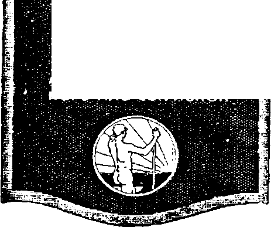

Golden
$
£2
A-JOUR.NAL-OF ' FACT , -HQPE-AND'CONVfCTlON*
a j welsar W
9-20 - 21
Apr. 13,1921, Vol II, No. 41
FZB Published every other 1K|1 w at 35 Myrtle Avenue, flrooklyn, Vcic York City
Caata ■ Copy—1X00 • Tear
C*Q a da. ind Foreign Countries, $2.50
VcL'.-^S 2 WEDNESDAY, APRIL 13, 1931 Ncmbtu 41
CONTENTS of the GOLDEN AGE
LABOR AND ECONOMICS
SMerar of Unemployment 399 Coal I nd ax cry the Pivot 403
I’ow* of Bntlah Labor—400 Transport Industry
. SOCIAL AND EDUCATIONAL
Social Condltlone — ......... . ■
FINANCE—COMMERCE—TRANSPORTATION
Economising Automobile Operation ..........
♦08
British Stnanceu -------
POLITICAL—DOMESTIC AND FOREIGN
Earth's Greatest Empire 387
Woes of Ireland.___394
John Boll and Uncle Sam3M
Churning for War____397
Militarism is Unpopular.—399 The Coming wingrtnin. ana
A Corporation Conadenee 387
A Banter's League—---3»
Ruaaian " Acid Tea V--------390
Blech and Brown Races—-399
TRAVEL AND MISCELLANY
Color and character- ------------ --------------
RELIGION AND PHILOSOPHY
The Jews Will Be Brought Out of Their Graves and Put
Into Their Own Land................-....................—
Sodomites Also to be Returned tor Their Former Estate—.412 Examples of Just Indignation Which Will be of Future
How Glorious Is God's Flan as Compared with the Creedal
Some Men’s Views Exalt the Wisdom and Power of Satan and Underestimate God's Ability
The Morning Cometh (poem)41 a
Fob tit every orbyp WadeMday at 3S Myrtle Awn:’*. 'Hem Brookljrnj New York. N. Y..
by ODWORTH, MUDGINGfl aad MARTIN
Edk>
CLAYTON J WOODWORTH
ROBERT J MARTIN .... WB. b HUDG1NGS......See"y <ad Tree*.
CcfaMncra ud pnertatora. AddrMi ’’■e MfrtU A**nii«., <HareeT Bron*!'ni> N. w Yurk, Na T. lev > ' Xtw * Coer —12.00 a Yuan, Hale remittances to TAe Golden Ape.
Volume II
Brooklyn, N. Y., Wednesday, April 13, 1921
Number 41
FOUR years ago the greatest empire that the world has ever seen had its back to the wall and was fighting for existence, but today it still lives and is greater than ever. More than ever before it has the whole world directly or indirectly under its control.
In three hundred years the British Empire has grown from an island kingdom containing 50,000 square miles and 6,000,000 population to an empire nine times larger than that of the Roman Empire at the height of its glory, containing 15,000,000 square miles and a combined ruling and subjugated population of 500,000,-000. This is 30 percent of the area and 30 percent of the population of the globe, and within this area is one-half of all the inhabitable, fertile land.
As a result of the World War Britain added to her empire, either by annexation or protectorates or mandates, a territory of 3,972,000 square miles, and a population of 51,275,000 people, ninety-nine percent of whom are natives. Not many of these people came under the British flag willingly; they must be held in subjection by force.
Before the war the British Empire possessed on the shores of the Indian Ocean four huge territorial masses, completely separated from one another. Now these lands are all connected, from the Cape of Good Hope to the Malay peninsula; and to all intents and purposes the vast Indian Ocean has become a British lake, enclosed on all sides by British territory.
There is a reason for this hunger for millions of square miles of territory and hundreds of millions of population. It is a desire for raw materials and for markets. The native soil of Great Britain and Ireland supports only about one-quarter of the population. The remaining , three-quarters must live by trading their services for food and clothing from beyond the seas, or go without.
Let no one suppose that the ruling classes of the British Empire do not know what they are about when they scheme and plot to get under their control as many of humankind as possible. When questioned closely they do not hesitate to admit that, in effect, the empire is a great trading corporation, as, in reality, all other empires have always been.
A Corporation Conscience
TT IS a favorite saying that “Corporations have no consciences”, and it is strangely true that when gathered together in pursuit of a common object men will do things they would never think of doing if acting upon their personal initiative and for their personal interests. What is true of corporations is true of empires.
The people of the British Isles are a people of unsurpassed intelligence, honesty and thrift, and of unexampled courage and fortitude; but their ruling classes, with high indifference to the good opinions of either Gott or man, have set a record for duplicity and cruelty which it would be hard indeed to match, unless it be lathe American administration which at last, thank God, has gone into the oblivion which it richly deserved. How much longer the British machine can continue to travel with this kind of gravel in its bearings is a question which furnishes part of the reason for this article.
At various times in its history the British Empire has been blessed with faithful, conscientious men at the helm, whose efforts have been along lines of justice and righteousness, but their endeavors to do as they wished were largely frustrated through the mischief of others.
In any event, a very small'acquaintance with history reveals the fact that by means of alliances, propaganda against competitors, and the maintenance of a large navy, the British Empire has at one time or another broken the commercial supremacy of Spain, Holland, Sweden, Denmark, France, Germany, Austria and Russia, and at different periods, as occasion required, succeeded in making all the rest of the world abhor the Spaniards, Hollanders, French, Russians, Turks and Germans.
It is no secret with large corporations as to how to do this thing. All that is needed is a printing press, a mailing list, and a go-to-church-on-Sunday and business conscience during the week. It is all a question of newspapers. / Give them money enough, and the news agencies will deliver any people on earth over to the hatred of the rest of the world.
And no corporation has ever beaten or equalled'the British Government in spreading false reports, inflammatory appeals to the best and to the worst sentiments of men, suppression of facts, exaggeration, abuse, misrepresentation, distortion, concealment and downright malicious lying.
A hundred years ago, or a little more, it came to light that the British Government of those days was doing a very profitable business with the pirates of Algiers and Tripoli. The deal that was made with them was to let British ships pass unharmed and to attack the merchant ships of other nations, a trick worthy of Standard Oil, in its palmiest days. Today the methods have changed, but the principles remain the same.
No honorable private person would think of snooping into another’s private mail. Any person caught reading another’s private letters is disgraced for life, and deserves to be; yet it was only in December, 1920, that in a hearing before the United States Senate committee considering cable legislation, John Goldhanuner, Secretary of the Commercial Cable Company, stated that British censors require submission to them of all American cable messages, including the official cables of the State Department of the United States. This evidence was confirmed by Clarence H. Mackay, head of the Postal Telegraph Company, and Newcomb Carleton, head of the Western Union. No J .• exceptions are made. Everything goes into the hands of these men ten days after the messages are transmitted.
Within the next month a great stir was made in America by the discovery that the principal American shipping concern, the International Mercantile Marine, had for eighteen years been under a contract with the British Government that if at any time it should do anything injurious to the interest of the British mercantile marine, or to British trade, the dispute must be referred to the Lord High Chancellor of the British Empire, whose decision on the law or the fact should be final.
A Bankers’ League
T N Thb Golden Agb Number 21 we paid our respects to the so-called League of Nations, ; the combination of politicians and bankers for the preservation of the British Empire and the i exploiting of the millions that have recently J been gathered into it. Every day adds fresh evidence of the unwisdom of America’.* ever entering that combination, if she desires to j remain free. ; ’
In 1790 Congress passed an act requiring that the president’s duties should be exercised ’-J at the seat of government, and on March 4, -'1
1913, passed another act that the President should not extend or accept any invitation to participate in any international conference without first having authority to do so.
No such authority having been granted to him, the President thereupon disobeyed both 5 laws, boarded the glass-roofed steamer which had been made ready for him at fabulous cost, raised the wages of one of his $3,000 henchmen - .4 to $30,000, proceeded across the ocean, dined on King George’s $15,000,000 gold plate, transferred himself to Paris, where he could sleep in a gondola-shaped bed in a bedroom thirty feet square, and take his meals at an inlaid mahogany table large enough to accomodate thirty-five guests, and brought forward his r fourteen points which were the ostensible basis for the conference. The real basis for the conference was the program for the League ’ of Nations, already in the pocket of its originator, Lord Phillimore.
For the sake of future historians, we summarize those fourteen points and explain what ,, happened to them: .
1. There were to be hereafter open covenants openly arrived at—and the proceedings were all in secret.
2. There was to be freedom of the seas—and Great Britain flatly refused to consider it
3. There was to be the removal of economic barriers—and those barriers, against some of the greatest nations, have never been lifted.’
4. There was to be reduction of armaments— and the American army and navy are larger than ever.
5. There was to be impartial treatment of colonial claims—and every colony was straightway grabbed.
6. The treatment of Russia was to be the acid test of Allied faithfulness — and it has been, most surely.
7. The territory of Belgium was to be evacuated—strangely, this was done and Belgium got two strips of bacon from Germany besides.
8. Alsace-Lorraine was to be restored to France—but she grabbed the Saar Valley, too.
9. Frontiers were to be adjusted along lines of nationality—but Italy thinks she was doublecrossed, and Germany surely was.
10. Austro-Hungary was to be given autonomy—and she has been carved into toothpicks.
• 11. There was to be peace in the Balkans— and they have as many wars as ever.
12. Turkey was to be made secure in her sovereignty—but Britain has taken Constantinople, Palestine and Mesopotamia.
13. A Polish state was to be created from Polish populations — but Poland was encouraged to invade strictly Russian territory.
14. Territorial integrity was to be assured to great and small—and the Shantung steal by Japan went through O. EL
It is very foolish and childish for people to look upon machines of government as sacred things, too holy to be profaned by touch or examination. Mr. Lloyd George has shown how much real sincerity of purpose was back of the League of Nations, when he declared that the mandates for people not yet able to stand by themselves were not the gift of the League of Nations, but were merely given by the Allies to one another. The covenant of the League itself expressly denies this statement, and the .word mandate implies delegated authority.
After the League had been in operation nearly a year the lower house, the Assembly, as it is called, wanted to have something to say about how things were to be done, and was told, in almost so many words, by one of England’s greatest men that the Council would do all the deciding, and the Assembly could just stick around and 0. EL the work.
This was one of the things that kept America out. American statesmen discovered that in the supreme council of nine members, five of which were always to be United States, Great Britain, France, Italy and Japan, there were four elective seats, which might at any time be occupied by Canada, Australia, New Zealand and South Africa, thus giving Great Britain five times the representation in the upper house that, strangely enough, was to have been accorded to the largest English-speaking country on the globe. In the lower house Great Britain demanded six votes to America’s one.
There were too many lies told, and there was too much selfishness displayed, in connection with the League, of Nations project to enable it to withstand the fierce fires of public scrutiny. The British Government has been caught in. .so many lies of late that it is now almost on a par with the Japanese Government in this respect. Nothing that it says is believed.
In 1914 the British Government made the statement in- open Parliament that it had no secret understanding with France and Russia, and later admitted, also in open Parliament, that it did have a secret treaty with those two countries, under which England was to join them in case of war with the central powers.
At the time that the British Government borrowed the $4,000,000,000 from the United States ' it knew that it then had in existence secret treaties with Japan and other nations detrimental to the interests of the United States, and prejudicial to the peace of the world. It accepted American cooperation in the war, accepted the fourteen points, and never disclosed those secret treaties except for the purpose of dismissing the fourteen points as impossible, when the time had come for making use of the "points”.
The British Board of Trade has declared that it is definitely committed to the League of Nations and its supreme council, and that it believes the supreme council fully qualified to supervise world business relations; and multitudes of preachers have declared that "The
League of Nations is the political expression of God’s kingdom on earth”, b'ut the facts show that it is one of the greatest instruments of hypocrisy ever invented.
On every possible occasion the League has worked openly or secretly for the restoration of monarchies, and in Hungary and elsewhere ' has encouraged the regathering of reactionaries and militarists, conspiring to overthrow every vestige of liberty. Its encouragement of Poland to wage war beyond her own borders is known to all
Jerome K. Jerome, a great English writer, said of the League of Nations:
“The League of the Three Nations—the League of England, France and Japan for the spoiling at all the earth—is dead. It was to have been an instrument— this precious League of Nations’—for the stabilizing to all eternity of all the villainies of Versailles. It was to have been a league for making the world safe for plutocracy, safe from any fear of democracy. It was to have been a league — this League of the Three Nations—for the putting of all Europe under the heel of France; the granting of a perpetual lease of half Asia to Japan; the turning of the seas of all the earth into an English lake. It was to have been a league for the chaining of liberty, for the letting loose of militarism to devour the people. The thing was conceived of evil men for evil deeds. Nothing could be done while it still breathed. Even now ita corpse lies across the pathway of the world.”
When the 1920 American elections became known, George Bernard Shaw, another great English writer, said of the American people:
"They have renounced the pseudo League of Nations; . they have repudiated alliances, and have made peace a separate matter between themselves and Germany. Their signatures to the savage treaty of Versailles have not saved it from being thrown over as a hopelessly bad job; and as they could not vote for a president apostate, they have voted for Washington, whom Mr. Wilson must face at the last with his thirty pieces of silver.”
In spite of the foregoing pungent language, Mr. Lloyd George made such remarks before the Empire Parliamentary Association in December, respecting a time when all nations would take a share in the work of the League of Nations, a s conveyed to his hearers the impression that he then had some definite assurance that the gentleman recently elected because he was not in favor of America’s going into the League would do all he could to see that she got into it If he was correctly understood, it all goes to show what we know to be a fact, that hypocrisy is not confined entirely to the eastern shores of the Atlantic Ocean.
During the American Civil War, British diplomats encouraged the strife, hoping to get both halves back into the . empire. What was not accomplished by that war may yet be accomplished by this League of Nations scheme. The leading banking house of America is a British banking house, and may confidently be relied upon to do all possible to accomplish British ends.
Russian “Aeid Tegt”
TT OW Russia was to be treated was to be the acid test by which the faithfulness of the Allies should be determined — and all of the Allies have tried to slay as many Russians as they conveniently could. It has been an open secret since the Spring of 1919 that executives of the British Government, but not the British people, were in full sympathy with the idea of making war against Russia, to please the International Plunderbund.
These executives expended nearly a billion dollars in hanging on to the flanks of the Russian people, either on the Archangel front or at Lake Onega, or at Baltic ports, or in Poland, or in Ukrainia, or in Siberia, or in Crimea, or Armenia. The only thing that has prevented these assassins and embezzlers from coming out into the open has been the certain knowledge that the British workers would not back them up. They have even admitted this in conversations with Russian monarchists, and, in order to accomplish what they could, have been proven guilty of falsehood and the using of the Red Cross as an instrument of warfare. This was one of the things so loudly charged against the Germans during the World War.
Great Britain never made any declaration of War against Soviet Russia, yet private wars have been conducted against that country for which the British people have had to pay. Promising the British people to evacuate Archangel and vicinity as soon as. possible, these executives sent picked troops t o Archangel to make sure that the evacuation would be delayed as long as possible, all because these executives, or those for whom they work, did not personally approve of the form of Russian government that seems to suit the Russian people better than Czardom.
After a definite agreement had been entered into with the Soviet Government not to undertake any hostile action against it, the British fleet was mobilized in the Baltic Sea in the interest oJ Poland; and when General Wrangel was cooped up in the Crimea, about to be overcome by Bolshevist arms, the British Government ask:-d for and secured an armistice for Wrangel, during which armistice it supplied him with British arms, ammunition, food and equipment.
For th. _>e years the British Government prevented the export of medical supplies and surgical requirements to Soviet Russia; but this is now changed, for the Russians somehow got hold of some perfectly good Chinese bonds, and the British Government allowed these to be sold in London and the proceeds used in payment for needed medical supplies.
British troops returning from the Archangel front have explained why the projected invasion of Russia was a failure. The officers were unable to explain to the men why they were fighting the Russians. At first the officers said that the Russians were worse than Germans; but despite the brutal treatment accorded to Russian prisoners by Allied forces, the Russians healed their Allied captives, and sent them back to the Allies well fed and warmly clothed, always to repeat the same question, “Why are we here?”
At length, no answer being forthcoming, to offset the Russian claims that Allied troops were there merely as representatives of bankers who wished to enforce payment of bonds issued by the Czar’s old regime, the officers finally came to be of the same opinion as the men, that the expedition was one of plain murder. The United States troops that were sent to the 'Archangel front were also sent without the consent of the people.
When the Poles attacked Russia, they were aided and abetted by the chiefs of the French and British War Offices, who supplied French officers and French and British arms and ammunition. Money credits were supplied by America, again without consent of the people.
No doubt there is truth in the claims of some of these men that Bolshevism is not democratic} that large classes of citizens are barred from voting, and that no general elections have been held or are likely to be held; But this was all ti-ue under the Czar, too; and France, England and America let him do about as he pleased. Of course the excuse for these attacks is that an independent Poland is necessary for the safety of Europe; that Russia and Germany must not be allowed joint frontiers, lest Bolshevism sweep over Germany. Ic it ever does, the Allies will be the direct cause of it, in the inhuman terms they imposed.
Representatives of British labor who visited Russia during 1920 are not enthusiastic to have conditions there duplicated in England, although they,claim that most of Russia’s troubles are due to the blockade against her, which has been so long enforced. They are well pleased with the Russian arrangement of a good minimum wage for everybody who works and nothing for those who do not.
They point out that Russia has been a pioneer in some things that England herself is now taking up. One of the Soviet Government’s first acts was to allot quarters for the homeless in all unoccupied or partly occupied buildings. The Health Ministry of Great Britain has been recommending the very same thing in Britain, insisting that-the vacant houses of peers and others be turned into flats for accommodation of the homeless.
At one time the Bolshevist armies reached a point within twenty miles of Warsaw; and when it looked as if Poland would be overwhelmed, England’s Premier made the statement that “Great Britain is bound to give every assistance in her power to save Poland”. This was done not only with an eye to the effect on Germany, but far to the east the Mohammedan states of Afghanistan and Baluchistan, which border on the British Empire in India, have sent envoys to Moscow, and Great Britain has reason to be apprehensive.* How a declaration of war was prevented will be told in another part of this article. There is a new master on the horizon whose will must be obeyed.
It is an interesting commentary on current history to note that after the Polish war the American President ordered the Russian
•In India the representatives of 70,000,000 Mohammedans have served formal notice that they will no longer cooperate With the British Government, .
Envoy Martens to return to Russia, involving the cancellation of large orders for which he was prepared to pay cash, and that the British Government has welcomed another representative of Russia to London to talk business.
Black and Brown Races
BRITAIN’S treatment of the black and brown races is not the same as her-treatment of the whites. Sir H. H. Johnston, writing on this subject in the London Observer, says of conditions in East Africa:
“The natives are slowing coalescing, Bantu with Nilote, Mohammedan with Christian and Pagan, Somali and Galla with the hitherto despised Negro, in their common hatred of the invading white man, owing to the exceptional cruelties which have stained the white man’s record during this period of fifteen years. Not only have murders, light-hearted murders, of natives taken place all too frequently, not only have revolting cruelties been. committed, but, when the white delinquents are brought up for trial white juries acquit them, or white judges inflict trivial penalties, or rebellious public opinion forces a governor to revise a sentence. I doubt if capital punishment for murder has ever been imposed upon a white man in East Africa.”
A native of India writes bitterly of conditions ’ in his native land:
“Countless millions have starved to death while food which they have grown has been shipped from their country. Their industries have been destroyed that they might not compete with Manchester and Lancashire and that they might remain producers of raw materials; their self-governing, democratic village communities have been destroyed and authority centralized in one hand, that exploitation might be more thorough; their schools have been destroyed, and education denied them, save that which fitted them for subordinate clerical
positions under European masters; opium and liquor hare been forced upon them by cannons with a fourfold purpose: revenue, easier economic subjection, easier political subjection, racial and cultural destruction.’* -
Out of a total population of 360.000,000 in India and her dependencies only 170,000 are Europeans, which shows that these immense countries are not held for colonization purposes; if they are not held for colonization there exists good ground for the charges above made. But let us examine more particularly the last of these charges, the one about opium. The Opium Monoply 'TTIRTUALLY all the opium in the world is . * grown in India by the British Government.
- It is a state monopoly, from the advancing of money to the cultivator, and the making ready of the opium at the Government factory at Ghazipur to the selling of it at public auction at Calcutta, where it is marketed without let or hindrance to the highest bidder.
All that this Indian writer has said about the destructive powers of opium upon a people is correct, and still more is true. It is useful among starving people to cause them to forget the pangs of hunger, it reduces or destroys the procreative powers and cuts the expectancy of life in half.
From this industry the British Government gets $15,000,000 net annually for opium which it sells outside of India, and $50,000,000 net annually for that sold within India itself. This enormous sale of opium is turning the people of India into drug addicts. A recent British Government Blue Book shows an increase of 44 percent in opium consumption and 67 percent in the use of other habit-forming drugs. No wonder the book was Blue! -
The British Government imposes severe restrictions against the importations of opium into England, Canada, Australia and New Zealand. The peoples of these lands are considered worthy of preservation, but not so those of the lands named below.
The heathen and. pacific Chinese do not want to ruin their people with opium; and so, in 1839, they destroyed 20,000 chests that belonged to that great. Christian and warlike Government that is connected in an official capacity with the Church of England.
In the war that resulted, China was forced to give up Hong Kong, was compelled to admit
opium through five ports and obliged to pay an * indemnity of $21,000,000. Nineteen years later, still objecting to the importation of the accursed drug, she lost five thousand men, butchered by the sword in five minutes time, was compelled to open five more ports to opium importations and to pay an indemnity of $3,000,000. We cannot but wonder whether some of this money was used to pay the salary of the Archbishop of Canterbury. No decent man would touch it with a ten-foot pole. In 1917 China shut off all opium importations, as part of her price for entering the war try which she was despoiled of Shantung and of 30,000,000 population.
Fifty percent of the revenues of the Straits Settlements comes from the sale of British opium to the poor natives. Oue-third of the Hong Kong revenue is from the same source. In 1917 the revenues of the island of Sarawak from the sale of British opium were $492,455 and in the same year 745 chests went to Formosa. Siam is not permitted to impose import duties on British opium and in the same year imported 1850 chests of 1401 pounds each. And then, let’s see, there was another backward country into which a vast amount of opium was dumped after the Chinese market was closed— - the United States of America. Well!—3,400 chests of opium were imported into the United States in 1918; and in the first ten months of 1919 the amount was 3,900 chests, or at the rate of 4,680 chests a year. Apparently British opium officials do not care any more for what becomes of the people of the United States than they do for those of India.
Petroleum Pa Mota
"D ETROLEUM is the ideal fuel for propelling A those mighty engines of so-called Christian nations styled battleships; and as organized ’ terrorism, in the interests of the Plunderbund, ’ is one of the permanent industries of civiliza-' tion, there is an immense amount of patriotism , displayed in these days whenever a fresh oil deposit comes to light. This is-the real reason why British-soldiers are laying down their lives in Mesopotamia. The country contains oil.
Even in the stress of the mightiest conflict that ever occurred on earth, the masters of the ’ British Empire found the men and the money ■ to invade and seize Mesopotamia, one of the garden spots of the world, in itself the prize toward which-the German scheme for a “Mitt el* europa” looked. At this writing the British Empire is holding a frontier in Mesopotamia • 550 miles long, with lines of communication of
about the ?ame length. It is ostensibly doing • this in the interests of the mythical Arab state sometime to be formed, but meantime it is shooting the Arabs and drilling for oil.
To be sure, the League of Nations covenant * expressly provides that mandatory powers shall not use the opportunity to establish economic monnjx>lies in the territories under their care; but as Britain is the League, and tells raK’. the League what it can do and what it cannot do, and as nobody pays any attention anyway to any of the covenants or rules or commands or anything else of th*e League of Nations, as such, there are no difficulties on this score.
But there are other difficulties. The American Standard Oil crowd have the smell of oil in their nostrils and are insisting, patriotically of course, that the United States should stand up for her rights—meaning their rights. Just what rights they have, or what rights the English crowd have to the natural resources of faraway Mesopotamia is not clear. But there is oil there, and if either or both of these crowds can get the oil they can explain everything afterward. A small boy with his face smeared with jam can always explain how it happened.
A year ago, England, as the holder of the Mesopotamia mandatory, made public the San Remo agreement, providing that 55 percent of ‘ the oil should go to Great Britain, 25 percent to France and 20 percent to the imaginary mandatory state itself, with the proviso that the whole oil territory "shall be under permanent British control”.
The Standard Oil crowd looked at that agreement and said, substantially: “Where do we come off! Did we not help to pass the hat and shake down the American people to the tune of approximately fifty billion dollars, to finance . this war? And now the pie is being cut, and we are not allowed even a crust!”
They proceed further with their argument, and the usual propaganda in the newspapers, that for many years Britain has been one of the largest consumers of American oils, having obtained almost unlimited supplies from America for her own use; that America owns only onesixth of the oil resources of the world and yet , has been producing three-fourths of the supply; that oil is sold here for $1.75 to $2.50 per barrel, and yet when Americans in the vicinity of the Mesopotamia and other eastern oil developments wish to buy oil, they must pay $7 to $12 , per barrel and, worst of all, American citizens : are prohibited from buying any oil lands in these fields. The further point is made that the oil supply of the United States will prob- j ably be gone in fifteen years, and certainly in ; thirty years.
The British papers argue that Britain has j expended a hundred million pounds in her humanitarian efforts to care for the interests of
the Arabs she is now butchering, and to get their oil, and thinks it in bad taste for America to want a fifty-fifty division of the spoils and to insinuate that maybe part of the hundred million pounds, or all of it, was borrowed money anyway, on which the interest still remains unpaid. And so it goes.
The London Evening Star, disclosing its ideas of the real purpose of the League of ' Nations, said on this subject:
“If Mesopotamian oil is to be brought into Hotch Potch, America must put up its proportion of the cost of obtaining it, or speaking more broadly, it must make up its mind whether it is going to be a partner in the League of Nations [L e., whether it is going to come back into the British Empire] or whether it is going to retire again behind the barrier of the Monroe Doctrine and to refuse all entangling alliances, their risks and their profits.”
Meantime the British soldiers are becoming • weary of being shot for the maintenance of oily principles and are declaring loudly, through the ranks of the labor organizations, and the progressive papers of England, that the Government’s imperial oil policy in Mesopotamia is a repudiation of the ideals which led men to join the colors.
Carving Up Turkey
IF ONE could imagine Turkey as a bird, with its head in Europe, its body in Mesopotamia, and with one of its wings in Palestine and the other in the Caucasus, Britain has the head, the body and one of the wings—namely, Constantinople, Mesopotamia and Palestine—while Armenia has the other wing, France, Italy and Greece have the best part of the breast, and Turkey herself has the neck and the wish-bone.
The Turkish Treaty, like all other peace treaties jockeyed through the League of Nations, is a gross violation of the definite pledges given by Mr. Lloyd George and by President Wilson. But in these days why mention solemn promises of statesmen—scraps of paper 1 They should go into the wit-and-humor column. The turning over of vast territories to the Greeks which are populated almost entirely by Turks, can have but the one effect of keeping Greece in a continual war which she is unable, of herself, to finance.
The British seizure of Palestine has already been treated of by Judge Rutherford in The Golden Age, Number 36; but we add a few
items. It now comes to light that in 1916- a secret treaty was entered into between France and Britain, under which it was agreed that '■ Britain should rule Palestine, despite the fact that, to win the support of the Arabs a year earlier, Britain had definitely agreed that the Arabs alone should rule Palestine. Now Christian and Moslem alike are combined against the Jew.
Mr. Churchill, in the House of Commons, has stated his hope that all the British expenditures in Palestine will be charged to the Egyptian and Palestine State railways. This means that it is the expectation of British financiers that when a country ia invaded it shall pay the cost of the invasion, and pay interest on that invasion cost forever. Whoever finally gets the Palestinian state (and the Jew will get it, as the Bible shows), will be expected to pay interest on the British bonds which will lie as a tremendous burden on the Palestinian railways. -
maneuvered in the disposal of Palestine, and
they probably were, while the fly in the British
ointment is that the French have complete con-
trol of Damascus and vicinity, which is on the
direct road from Palestine to Mesopotamia.
Meantime the Arabs have told the French to
get out of Syria and Lebanon, and the British to get of Palestine. Before they get through with it, all these contending nationalities, in- i eluding the Turks from whom the lands were wrested, will find that “the earth is the Lord’s”, , and that He will have the final say in the matter. "
Woes of Ireland
IVTILLIONS of the English people would be glad to give the Irish what they want, if there were any way of determining what that is. Some of England’s greatest men have even proposed to abandon the island utterly and let . the Irish people fight it out among themselves, as they would most surely do. Meantime everybody is agreed that present conditions are intolerable.
Th£ Golden Age, Number 39, contained a dispassionate and illuminating article on the Irish question from a subscriber in Dublin. We . supplement his observations with other items
tint* Viavo Anma to light, but without, at this time, nndartaiong any examination of this intricate problem.
Troland has been in periodic revolt against the British Government for about seven hundred years. The present revolt was undoubtedly organized, and is financially supported, by the fifteen million Irish people or the descendants of Trish people, that make their homes in 'A marina- It is claimed that more than fifty million dollars were collected in New England alone for the purpose of arming and encouraging the Sinn Feiners. A considerable portion of thia came from poor chambermaids and working people.
The population of Ireland was reduced from $175424 in 1841 to 4375,554 in 1914. Enemies at British rule point out that this is a result of British misrule, citing that transportation rates are 37 percent higher in Ireland than in England, that a parcel can travel 500 miles in England for half the price it can travel 30 miles in Ireland, and as Sidney Smith, an English writer, says: “One by one we have strangled Ireland's incipient industries. Woolens, glass, cotton, sail doth, sugar refining, the cattle and provisions all went.” This is one aide of the story; and on the other is the fact that Irish legislation has occupied a great part of the time and attention of England's wisest men for generations, in the hope of appeasing Irish wrath and of bringing about satisfactory conditions.
One thing is sure, no one will question the terrible conditions that now prevail in that unhappy isle. The British Society of Friends, in an official report, stated last fall that “the English Government has ceased to function over at least eighty percent of Ireland.” So true is this, and so desperate are the conditions, that when the Government recently drew a panel of 296 jurors in Cork, only twelve men responded.
Hardly a day passes without accounts in the papers of the shooting of British constables, sometimes a dozen or twenty at a time, from ambush, and although the stories of reprisals by the constabulary do not obtain as wide publicity, they are nevertheless just as terrible. The Royal Trish Constabulary have black caps and khaki uniforms and have been nicknamed “Black and Tans*.
Between January 1, 1920, and October 2, 1920, the list of crimes laid at the door of the Sinn Fein amounted to more than 3,000 outrages and murders, but for all these murders and shootings of police it is claimed that the number of perpetrators apprehended could be counted on the fingers of one hand, so perfectly is the Sinn Fein movement organized.
On the other side of the question, and without admitting that Sinn Fein had committed 3,000 murders, or even one 'murder, The Monitor, a Catholic weekly published in Newark, N. J., in its issue of October 23, gives the dates between September 9, 1919, and September 27, 1920, of the reprisals by the Black and Tans, and it is a truly terrible list.
Within this period, creameries were wrecked, or shops or houses were wrecked, or towns were sacked or partially sacked, or volleys of musketry were fired along the streets or into the residences of prominent Sinn Feiners in each of the following cities and towns, and in Limerick City this happened as many as fifteen times. In others of the towns named it happened from two to six times each. The list follows:
Ardrahan, Arklow, Athlone, Balbriggan, Ball-aghadereen, Ballina, Ballinamore, Bantry, Boul-aduff, Caltra, Carrick, Castleiny, Castlerae, Cork City, Doon, Drumoleague, Drumshambo, Dublin, Dundalk, Emly, Enniscorthy, Ennisty-mon, Fermoy, Galbally, Galway City, Glengar-iffe, Inniscarra, Kilcommon, Kildorrery, Kill, Killea, Killorglin, Kilmallock, Kinsale, Knock-long, Lahinch, Leap, Limerick City, Lismore, Loughmore, Middleton, Milltown, Naas, Newcastle-West, Newross, Oranmore, Queenstown, Rosegreen, Salthill, Shanagolden, Swords, Templemore, Thurles, Tipperary City, Tralee, Trim, Tuam, Tullow, Union Hall and Upper Church. -
In the forty-two attacks on the creameries, twelve were utterly destroyed. At Newross, in September, a little girl five years old was shot in the back and killed when she became frightened and ran, after she had been ordered to halt. The city hall of Cork was burned by the constables, who forcibly prevented the firemen of the city from quenching the flames. In spite of these illegal reprisals very few of the troops have been tried or punished for them, and nothing has been accomplished in checking them.
It is a sad commentary on the moral condition of the victors in a war to rescue the world from the clutches of German militarism and frightfulness, that it becomes necessary to make such attacks as some of these were. Such savagery reminds one of Darkest Pennsylvania when the cossacks of the Steel Trust used similar methods in ending the steel strike.
The Dublin correspondent of an. English newspaper, writing of the sacking and burning of the village of Balbriggan, in reprisal for the killing of two of the constabulary, said:
"In its brutality, wantonness and destructiveness, last night’s work of the uniformed forces of the crown was comparable only to the story of some Belgian village in the early days of the War. People were fleeing the town in conditions as pitiable as any set of refugees that ever left Louvain.”
In the burning of Louvain the Germans had the beastly excuse of military necessity. The aggravation in each case was the same, the shooting of the men from ambush, always a cowardly, contemptible act.
Henry W. Nevinspn, a British writer, in a written apology to the ghost of the Turkish Sultan, “Abdul, the Damned”, sets forth the reprisals in Ireland in the following language:
“The agents and representatives of the British Government follow your example in burning villages to skeleton. Under the pretext of reprisals for crimes which their victims certainly did not commit, they pitilessly murder. They drive women and children out into the fields and mountains. They spread cruel destitution through the land. They destroy the main sources of production and livelihood. Judged from what I see before me, they appear to contemplate the utter ruin of the country in the hope that the surviving inhabitants may be compelled to emigrate.”
John Bull and Uncle Sam
NOW that the war is over, the old family discord has broken out again. There are many unsettled differences between the United States Government and the British Government, due to the war. Britain claims $100,000,000 for damages in Mexico, for which the United States holds herself responsible; and the United States claims losses of approximately like amount for depredations upon six hundred cargoes of American commerce at sea.
As a neutral nation, the United States was entitled, by written international law, ratified at the Hague conferences, to all rights of free voyage, free cargoes, free mails and cables. But every one of those rights was arbitrarily suspended by the British Empire without a so much as “by your leave”, and the late lamented . British-American administration submitted to it with hardly a squawk of protest.
Not only did America meekly submit to this violation of her neutrality, but even submitted to the humiliation of consenting that American ships with noncontraband cargo, bound for neutral ports in South America, could not leave American ports without permission of a British consular officer. The history of the planet could be searched in vain for a like example of cheek on the one hand and cowardice on the other.
To pretend that the United States was ever neutral during the war is to pretend what every body knows is untrue. Everything possible was done to help the cause of the Allies. The sale of naval vessels to a belligerent in time of war is a violation of neutrality, yet a number of submarines-were made in America and shipped to British waters via Canada long before America entered the war.
Rubber was noncontraband, an article of free commerce among all nations; yet Ampriean citizens were jailed before America entered the war, for attempting, within their strict legal rights, to send rubber from America to Germany.
As to how America came to enter the war, this has already been discussed in The Golden' Age, Number 21. America had no more reason at any time to get into the war than had Norway, Sweden, Denmark, Holland or Spain, asked for nothing when she went in, and came out with just that, and was the only one of the Allies that had such an ideal or such a reward.
The widely believed notion that a hundred million Americans, with four times Germany’s wealth, fifteen times Germany’s territory, and twice as many men, were ever in danger of invasion or subjugation by an armless and legless Germany, at the end of the greatest war of history, in which she was attacked on all * sides by millions of men, and for several years, is the most ridiculous thing that human beings ever believed at any time in the world’s history; and the American press is entitled to most of the glory, and got most of the money, for making Americans believe that lie.
Churning for War
OW the people of the United States were induced to enter into the war was related by Congressman Callaway on page 3321 of The
Congressional Record for February 9, 1917. In reading the following, it should not be forgotten that J. p. Morgan was the fiscal representative of the British Government in the United State:
“In March, 1915, the J. P. Morgan interests, the steel, ship-building, and powder interests, and their subsidiary organizations, got together twelve men high up in the newspaper world and employed them to select the most influential newspapers in the United States and sufficient number of them to control generally the policy of the daily press of the United states.
“These twelve men worked the problem out by selecting 179 newspapers, and then began, by an elimination process, to retain only those necessary for the purpose of controlling the general policy of the daily press throughout the country. They found it was necessary only to purchase the control of twenty-five of the greatest papers. The twenty-five papers were agreed upon; emissaries were sent to purchase the policy, national and international, of these papers; an agreement waa reached; the policy of the papers was bought, to be paid for by the month; and an editor was furnished for each paper to supervise and edit properly information regarding the questions of preparedness, militarism, financial policies, and other things of national and international nature considered vital to the interests of the purchasers.
“Thia contract is in existence at the present time, and it accounts for the news columns of the daily press of the country being filled with all sorts of preparedness arguments and misrepresentations as to the present condition of the United States Army and Navy, and the possibility and probability of the United States being attacked by foreign foes.'
'"This policy also included the suppression of everything in opposition to the wishes of the interests served. The effectiveness of this scheme has been conclusively demonstrated by the character of stuff carried in the daily press throughout the country since March, 1915. They have resorted to anything necessary to commercialize public sentiment and to sandbag the National Congress into making extravagant and wasteful appropriations for the Army and Navy under the false pretense that it was necessary. Their stock argument is that it is ‘patriotism’. They are playing on every prejudice and passion of the American people.”
The twenty-five great newspapers above mentioned know that they have it absolutely in their power to arouse the American people to fury at any time and on any subject, real or imaginary; but in thia instance they are not entitled to all the credit. They were ably assisted in American pulpits by prominent representatives of the Church of England, whose voice, when it pays, is loudly for war, for murder, for violation of the command, “Thou shalt not kill”, and for ignoring the plain statement of the founder of the Christian religion that “they that take the sword shall perish with the sword”. To make a true preacher of the gospel one must have other qualification than abilitv to wave a battle-flag and put up one continuous howl for money.
During the war Uncle Sam gave and gave and “gave until it hurt”. He gave $1,000,000,000 for the making of shells, and not enough American shells went to France to load the American guns ten minutes. He gave $478,000,000 for guns, and only 72 American guns reached the American forces during the war. He gave $150,000,000 for building terminals at Charleston and at Norfolk from which not a boat sailed during the war. One of these terminals, up the riVer from Charleston, on which $20,000,000 was spent," was situated in water so shallow that a ship could not reach it anyway.
Uncle Sam gave $120,000,000 in building nitrate plants which did not produce a pound of nitrate during the war. He gave $117,000,000" for gas shells and not an American gas shell was fired during the war. He gave $100,000,000 for building battle tanks, and the first American tank reached France after the armistice was signed. He gave $70,000,000 for a powder plant at Nitrate, West Virginia, and as soon as it was finished sold it for $8,000,000 and threw in $8,000,000 of material for good measure; and he spent $7,000,000 on a training camp in Virginia after the armistice was signed. Nobody can deny that Uncle Sam is a good spender. Everybody in the country that had a dollar, or could make a dollar, was expected to dig down- and pay, pay.
And America was a good friend- to Britain during the war, too. In April, 1918, when England was threatened with a revolt in India, the United States came to her rescue by selling her 207,000,000 ounces of silver coin at $1 per ounce, when the market price of the silver in the dollars thus sold and melted into bullion was $1.40 per ounce. Great Britain was the gainer by this transaction, in the sum of $82,800,000.
American courts were not free from British influence during the war. When Hindoos were arrested in San Francisco, and sent to the penitentiary for trying to free their country, the British Government paid the wages of the agents of the United States Government add superintended the trial.
Great Britain spends three hundred million dollars on aerial navigation to win the, next war, and America spends but a tenth of that amount. Great Britain, Australia and Canada give bonuses to soldiers, but the United States is too poor to do so. Great Britain continues to build vessels for her navy on the principle that the British navy must be twice as large as the American navy; and America wonders.
Senator France, of Maryland, made the statement in December that the American State Department is dominated by the British Government, and is subservient to it. More recently, however, the United States, as a participator in the World War, and as a contributor to its successful issue, seems to take the position that the game of bluff has gone far enough, and that the United States has the same rights of discussion and participation in the rights and privileges secured by the war as any other nation, regardless of whether or not that nation is a member of the bogus League of Nations.
British Finances
THE following is a comparison of the expenses of the British and the Amprican governments for nine years ending with 1920. In this calculation exchange is figured at the now prevailing rate of $3.80 to the pound.
|
American |
British | |
|
Year |
Government |
Government |
|
1912 . . |
$ 925,695,713 |
. $ 715,395.334 |
|
1913 . . |
967,737.255 |
750,473.282 |
|
1914 . . |
1,006.662,216 |
. 2.129.869,425 |
|
1915 . . |
1.052.848.682 |
. 5,924,791,833 |
|
19m . . |
1.072.894.093 . |
. 8.332,828.298 |
|
1917 . . |
3,016.183.746 . |
. 9.925.641.339 |
|
1918 . . |
21,813.356.508 . |
. 9.768.283.800 |
|
191! • . . |
18.514.000.000 . |
. 6.329.937.128 |
|
*192o . . |
11,477.627,210 . |
. 2.652.342.700 |
$59,877,005,432
$46,549,563,137
‘Estimated.
The estimated wealth of the United States before the war was $250,000,000,000; after the war, $300,000,000,000. The estimated wealth of the British Empire before the war was $130^
000.000,000; after the war, $230,000,000,000, the added wealth being largely in the Mesopotamia oil fields, in the African territory taken away from Germany, and in the elimination of Germany as a competitor.
During the war the private wealth of the 340,000 British citizens whose fortunes exceed five thousand pounds sterling, increased by more than ten billion dollars. Five hundred of the peers of the realm own a third of England, and four thousand landowners own a half of the entire area. Some of the greatest fortunes are identified with the liquor business; there are twenty-nine brewers in the British parliament and, on the authority otJohn Bull, many vicars and clergymen are stockholders in the breweries.
With all its greatness, it is possible for the British Empire to be obliterated within a year’s time, as was the case with Russia. The thing that could end it is insolvency, and this might come suddenly. Europe is sinking deeper and deeper into a financial morass, and the British Empire is with difficulty making both ends meet. Britain is Europe’s principal creditor.
From April to December, 1920, the total British national revenue was £888,803,728, and the expenditures £842,68^,719. We have not the data at hand, but understand that Britain has been counting sales of war stores as revenue, which is like a man counting as profit the proceeds of a fire insurance policy, after a big fire which has burned him out.
Considerable has been done in the way of reducing expenses. The salary list has been gone over; some high officials have had their salaries reduced and some have been slightly increased. The salary of the Prime Minister has been increased from £5,000 per year to £8,000. Members of Parliament receive only £400 yearly.
The British Empire is the greatest trading corporation in the world, and the shrewdest trader. It imports four million bales of cotton per year, but for the past two years has had a committee investigating the proposal to grow all this cotton upon its own newly acquired African lands.
One of Britain’s important industries is the insurance business. The annual premiums on this business from America to England amount to about $600,000,000. In the effort to force Britain into granting an Irish Republic there
has been a considerable effort at boycott of British insurance on the part of many Irish-Americans within the past year.
Among the items which were bought by the British Government during the war were: 1,186,000,000 sand bags 164,314,787 pairs of socks .
81,538,000 yards of khaki 61,899,626 pairs of boots 49,508,669 blankets 23.776.345 jackets
t 20,190,810 pairs of woolen gloves
The first shells for the British army cost the Government $7,000 each, but not for long. The first thing the makers of these shells knew the Government put all the factories on a strict cost-accounting system, and no doubt saved billions of dollars in so doing.
Specter of Unemployment
UP UNTIL October, 1920, British unemployment was low. Five million ex-service men and two hundred and ten thousand officers had been reabsorbed into industry, leaving only one hundred and sixty thousand able-bodied ex-service men and twelve thousand officers still unplaced. But by January, 1921, when the League-of-Nations hard times was in effect, a tenth of the population of Britain was without employment, and the premier was at his wit's end to know how to deal with the problem.
There have been unemployment riots, and still more significant than the riots themselves have been the preparations that have been made to stand off the rioters. On October 18th a mob of twenty thousand stormed the government offices. Bricks, stones, paving debris, bottles and clubs shattered the windows of the Treasury, the War Office; the King's Privy Council, the Home Office, and other government buildings.
Strong policed barricades have now been erected, obstructing the approaches to these buildings, and the huge iron gates that were at one time considered useless accessories of the public buildings are now kept closed. The ! official explanation is the fear of Sinn Fein activities; but, as we have seen, the official ex-■r planation is seldom the real one. The real fear r is that inspired by the knowledge that a million ex-soldiers are out of work. Lloyd George stated in January that it may be necessary for
millions of British people to emigrate to the colonies. ?
The difficulty is that England is so largely‘ a manufacturing nation that a falling off in < world trade affects her first and worst of all the nations. The demand for new shipping has -fallen off, and with it has come a lessening S demand for iron and steeL The workers are not so efficient as formerly, and costs are away * up. A German bicycle can be bought in England for one-fifth the price of a good English wheel
The people of England know from experience that labor-saving machinery does save labor, and this adds a perplexing factor to the situation. As long ago as 1897 blast furnaces in England were put on eight-hour shifts, thus making room for one-third more men than formerly. And the steel mills, which in America continue to run on twelve-hour shifts, in England operate on eight-hour shifts, and are usually closed down for the week end. Even with all these concessions, the number of unemployed is great and growing.
MiUtarigm io Unpopular
TOURING the World War Britain raised an U army in the British isles numbering the almost unbelievable total of 5,704,416 men, while the total troops of all kinds raised within the Empire was 8,654,467. The number maintained at the front was 6,616,000. The number of soldiers from the British Isles killed was 662,083, with 140,000 missing and prisoners. The wounded numbered 1,644,786. The total losses of the Empire, killed, missing and prisoners, amounted to 1,216,000 and the wounded to 2,500,000. After the war President Wilson declared that it was a commercial conflict
After such an experience it is not to be wondered at that the people are sick of militarism. At the conclusion of the war, in obedience to the wishes of the people, the British Empire completely eliminated conscription. When it proposed this at the peace conference it had no backing, even from the United States, despite the fact that reduction of armaments was one of the fourteen points upon which peace was supposedly based.
Today the empire is holding a land frontier, stretching from Egypt eastward amounting to about 4,500 miles. In Ireland, in September,
there were 75,000 British troops; there were 19,000 in Constantinople, 60,000 in Egypt and Palestine, 6,000 at Aden, 101,000 in Mesopotamia and 200,000 in India. Recruiting for these armies is dwindling, and the number of new recruits, it is said, does not equal the number of desertions from the infantry.
Tn the effort to find soldiers, the Government has even had under consideration a plan to restore the old-style scarlet uniforms, once so attractive to maidens and to some men who like to look like showmen. The Government was even disposed to waste the three million pounds sterling which the change would have made, but such a storm was created that it had to give up the plan, except for what are termed the Household Cavalry and Guards.
One might think that in a time of unemployment men would be glad to rush into the army to obtain work, but not after such an experience as the World War. Before the Civil War; militia companies were popular in the United States, but after that great conflict was ended it was with difficulty that any of them were kept alive.
Social Conditions
THE war has had a degenerating effect upon the British people, reflected in the newspapers, which are on a lower plane than formerly, resorting to the familiar American method of giving great publicity to murders, divorces, suicides and horse racing. The streets are not so neatly paved and the people not so well dressed; the hedges are not so well trimmed; the country roads are not in so good condition; many buildings need painting.
We have treated of housing conditions at length in The Golden Age, Number 31, but here add the general observation that the homes of the working people are largely without modern plumbing, with bad ventilation, bad light, old fashioned cooking arrangements and poorly constructed buildings.
In Norwich one can still find wretched alleys where, in houses placed back to back, there is but one faucet used by four families. It is said that two generations of life under such conditions make the surviving members of the families deaf-mute consumptives. In places the lower floors of such houses can be seen inhabited by women working early and late at sewing machines, while the upper portions have fallen into such disrepair that they cannot be inhabited.
The great and prosperous middle class which has until recently been found in the United States is represented in England by a smaller number of people, and their lot has become harder as a result of the war. An evidence of this is that there are few automobiles on the streets or roads of England as compared with America. Even those who have cars seldom take them out of the garages. There is not the general use of cars by almost everybody, which exists in America.
Liquor continues to have a great hold upon the people. The estimated value of the liquor business is one billion pounds sterling. Church attendance has fallen off. The people as a whole have no respect for an institution which, as revealed by the war, has no principles for which it is willing to suffer; and hence, even in Sabbatarian Scotland, eighty percent of the people remain outside of all church connection.
Due to the industrial and trade revival which prevailed until last Fall, there was a pronounced increase in the birth rate. The war also brought a temporary revival in agriculture, but the fall in prices has already turned some of the ploughed land back to grass and the food production is shrinking.
Power of British Labor
IN ENGLAND there are nearly six million organized workers, the largest number of union workers in any country except Germany. These workers know their power. They realize that they could end the government—the administration or cabinet in power—in a week’s time by bringing on a general strike; but they have formally agreed by a vote of 3,732,000 to 1,015,000 not to do this, but to keep on by peaceful election methods until they accomplish their objective, which is the control of the Empire.
The reason why the workers are not willing to resort to an unconstitutional method for overthrowing the present government is that they know that if they resort to such methods those methods will be used against them later. To do unconstitutional things is only to encour- • age others to do the same.
The Labor party, however, has threatened a general strike in order to accomplish certain
things which it adjudged of the highest importance. One of these objects was to secure the . abolition of conscription, another to secure the immediate release of all conscientious objectors, ‘ and the third was to compel a stoppage of the sending of troops to Russia. The Government gave in on all of these points.
After previously forcing the Government to bring back the soldiers on the Archangel front, British labor forces saw themselves on the edge of another war with Russia last summer, at the time when the Bolshevist armies were near Warsaw and when Lloyd George said in that ' connection that Britain felt it her duty to do all possible to protect Poland.
At that time, August 7, 1920, the London 'Daily Herald, urging labor forces to get together for the real peace which the European backers of the League of (abomi) Nations never ' wished to see, said:
1 “Labor cannot relax its preparations for stopping
the war until it is certain. We cannot trust the Govern-
• ment an inch. There is no lie that our rulers have not sunk to, there is no falsehood or illegality of which they are incapable. Labor has only got to fold its hands for forty-eight hours, and we shall see the end of the wickedest Government which has ever betrayed thia country.”
Accordingly the Council of Action, as it was «. called, served an ultimatum on Lloyd George M that England must not go to war with Soviet Russia. The ultimatum was presented at noon, August 10, 1920; and although Mr. Lloyd George denounced this demand as one of die most formidable challenges ever given to any government, he nevertheless admitted that the ' Government would do as the Council of Action wished.
The workers of England, now fully organized, know that in the event of war they would have to do the fighting, the working, the production and the transport. They desire an end of fighting for commercial causes or other causes which they do not understand, an end of fighting their fellowmen for the sake of interest on 7 bonds or any other of the supposed govem-‘ mental perquisites of Big Business. They think
they have had enough of governmental secrecy ’• and trickerv.
f ___ •
' These British labor leaders are not anarchists. They are thoughtful men, as witness the • following statement by Arthur Greenwood,
Secretary of the Cost of Living Committee of the Trades Union Congress held at Portsmouth in September. He said:
“The policy of raising wages to meet increasing prices is the policy of futility. The only way for the workers to deal with the issue, is to take the whole matter into their own hands. Society is carrying on twenty or thirty wars at the present time. We ourselves are spending fifty or sixty millions sterling, per year, in a mad venture in Mesopotamia. What is the result? Millions of people are withdrawn from producing the necessaries of life, and made to produce things that are not necessary. Then, of course, the necessaries must grow scarce and the cost must rise. We cannot hope to solve the cost of living problem until all the productive power of the world has been put back to work. Therefore, our program depends in the first instance on universal peace.”
Lloyd George, warning against the control of the country by the Labor party, and incidentally trying to hold on to his job as long as possible, recently made the statement:
'Tour-fifths of this country is industrial and commercial. This country is more topheavy than any other country in the world; and it it begins to rock, the crash here, for that reason will be greater than in any land.”
But England has rocked around badly enough while Lloyd George has been at the helm. He has stood for almost everything in its turn, having won his last election by going up and down the land with the cry that the Kaiser must be hanged. But the latter was not hanged. Even that staid admirer of things as they are, the New York Times, said of Mr. Lloyd George and his timely flops:
“He differs with himself so radically from week to week that he ought to be patient with members of his Government who differ with him. He may come to be of their opinion—each of them in turn.”
Lloyd George recently addressed the British Parliament in the following remarkable words:
“Gentlemen: This World-wide trouble is fast growing beyond human control; but I see before me a Government which is founded upon justice: a Government in which all religious prejudices and racial distinctions shall cease.
“I see growing up before me a Government in which the much-to-be-desired condition shall be attained of the universal fatherhood of God and brotherhood of men.
'T see rising up before me a Government that is founded upon justice and whose workings are based upon love.
“This Government comes not from the hand of feeble man, but from the power of the Almighty God.”
Never before has Labor entered so emphatically into the diplomacy of'the government. It is refusing to cooperate with or to be bound by the efforts of financiers to use the blood and brawn of the British people hereafter as they have, used it in the past. The Government, whenever Labor shows its hand, claims that it has intended all along to do just as Labor requested. But its past acts belie this.
Seeing the growth of the Labor party in England, and realizing that if present tendencies continue, it will be but a short time until the older parties will be defeated, quite a number of prominent men from those older parties, seeking to make the best of the situation, have joined the Labor party, certainly not to its benefit, even if to their own.
British Labor men have found considerable dissatisfaction with the work performed for them by their representatives in Parliament. The reason for this is that law-making is a business, the same as anything else, and that the clever politicians who have been in the game for a long time have expedients for defeating the wishes and intents of even a majority until experience enables the majority to get their wishes into concrete shape.
Not infrequently Labor stands in its own pathway—and unavoidably so, sometimes. The people must have houses, and the money and materials for building these houses can be obtained, but the union labor workers are not willing that their ranks should be recruited by unskilled labor in order to meet the shortage of labor for house construction. The government wanted to employ jobless ex-soldiers on buildings, and would have been glad to put an end to the housing shortage and the unemployment problem at one and the same time, as far as lay in their power, but were threatened with a general strike if they attempted it. The Government's plan was a practical one: for concrete houses, now in such general demand, can be constructed almost exclusively by unskilled labor. Under such circumstances, it was not fully reasonable for the demand to be raised that 85 percent of wages be guaranteed to workers as unemployment insurance, as was done by some of those who would not let these jobless ex-soldiers engage in making homes for themselves.
But as a rule the demands of the British workers are reasonable. Their principal objectives are shorter hours and higher wages, so. as to abolish poverty and its effects, an equal voice with their employers in the committees which exercise general control over their respective industries, and the ownership by the nation of such things as transport and mines, which are essential to the national life. *
For months the Government had a commission, headed by Mr. Justice Sankey, investigating the coal industry. It was brought out at this tribunal that there were dukes and marquises who received in royalties more per ton on every ton of coal mined than the miners received in wages on the same tonnage. How this reminds us of those happy times during and after the war, here in America, when the owners and operators of cotton-mills received 100 percent or more profit per year, sometimes receiving more in profit on every yard of goods . than the worker received for making that yard!
After the commission had concluded its labors Mr. Sankey in his report said: “The present system of ownership and working in the coal industry stands condemned, and some other system must be substituted for it, either nationalization or a method of unification by national purchase and [or joint control.” But it is regrettable to note that when the report came up in Parliament both suggestions made by Mr. Sankey, the state ownership of coal mines, and the state purchase of royalties on the mines, were instantly defeated by a large majority of the politicians of the old British parties which like the chief American parties are awaiting political interment.
Not all of them are blind, however. In the debate on the subject Sir Eric Geddes, Minister of Ways and Communications, said: “In the past, private interest made for development, but today, I think I may say, it makes for colossal waste. We must forego the luxuries of competition, we must forego private interest and local interest in the interest of the state.”
Trend Toward Socialism.
THE principle is growing in the minds of men that the right way to govern a country is to govern the businesses of the country, and that the best way to govern a business is by
the men in that business, all of them, collectively. Steps are being taken in several of the > businesses in England looking to something of this kind.
The Building Trades Parliament is a case in point. This parliament consists of 132 mem-I bers, sixty-six elected by the twenty-two trades unions of the building industry, and sixty-six elected by the seventeen associations of building trades employers. The chairman is a member himself. This parliament does not deal with any disputes.
There is a growing recognition of the princi-pie that capital must share the burdens which have fallen upon mankind as a result of the war. The proposition has been brought forward that by levying a tax on capital the war debt of eight billion pounds sterling could be cut in half. About three billion pounds of the four billion pounds sterling of war profits in England is in the hands of 340,000 persons. These persons are presenting 340,000 good reasons why capital should not be taxed, probably feeling no assurance that an administration which would take their war profits would be content to stop merely at that point.
These wealthy people are only increasing the "red” menace. A Westminster Gazette corre-’ spondent in Scottish mining centers says:
“There is no use trying to blink the fact of tho ' formidable nature of the Bed revolutionary organization established in many mining areas in Scotland. There are now revolutionary centres in Lancashire, Fifeshire, Dumbartonshire, Ayrshire and Renfrewshire. These groups are now being formed into the Communist Labor Party.”
Twelve hundred delegates of the British Labor Party, representing 6,500,000 workers, at a great conference in Scarborough in July, 1920, voted 2,940,000 to 225.000 that it will neither aid nor abet revolution by violence. At the same time, it went on record as determined that Soviet Russia should not be hampered by outside interference in choosing its political and social form of government.
Coal Industry the Pivot
THE coal industry, taken over by the Government under the war powers, is still under government control, and the miners wish to keep it there, and, if possible, to freeze all the profits out of the industry, so that it may be operated for the benefit of the workers in the industry and of the consumers of the coal. Meantime the Government has been planning to return the mines to private control. This has caused several strikes, and bids fair to be the pivot on which the British Empire will finally swing into some form of socializing of important industries such as that practiced by all governments during the war. The mining population, with its, families, constitutes about one-eighth of the population.
It is directly to the interest of the British people to produce all the coal possible; for if ships sail empty from British ports to bring wheat from Canada, Argentina or Australia, the wheat must bear the cost of both the outward voyage and the inward voyage. If the vessels can carry outward coal to a world which is short of coal, and manufactured articles to a world that is short of goods of all kinds because of the War, the homeward freight is reduced and the food costs less.
But the exports of coal have not of late been near what they used to be. Five years ago British exports of coal were five times as large as those of the United States; now the coal export of the two countries is nearly equal. The coal trade with Argentina seems to have passed entirely into American hands.
The British Government claims that more men are engaged in coal-mining than in the year liefore the war, and that the output of coal in the last year was fifty million tons less than in the year before the war. The miners claim that the increases of wages which they have received have not been sufficient to equal the increased cost of living, and that the reduced output is due to deterioration of colliery plant, difficulties of transport and other causes over which the workers had no control.
Before the war the average pay of the miners was $8 per week, and they were at all times badly housed and practically on the verge of starvation. In 1920 the average pay was $22 per week. Before the war the day’s work was eight hours; in 1920 it was seven hours. Official figures showed that in the quarter ending June 30, 1920, the total profit in disposal of the product of the mines was thirty million dollars. These profits were taken by the State and devoted to paying State debts and thus lightening taxation.
Transport Industry ■
OF ALMOST equal importance in deciding the fate of Britain is the situation with respect to transport of goods. The transport workers of England are determined to do noth* ing to aid the cause of war, and their attitude is reflected on the continent. In Ireland the railwaymen, with the backing of the Irish Trades-Union Congress, adopted a policy of individual refusal to transport troops, armed police or munitions. In England dockers refused to load the “Jolly George” with munitions for Poland.
On August 14, 1920, German workers sidetracked four trains loaded with soldiers bound for the Polish armies in their fight against Bussia, and two hundred and forty cars were held up at Karlsruhe because loaded with munitions for the same destination.
The workers of Czecho-Slovakia and Austria refused to help move troops or ammunition across their countries to help Poland war against Bussia; Italian seamen in New York struck against carrying Polish reserves to the Polish front; and four thousand dock workers at Antwerp stopped loading two vessels when they discovered that cases marked “pianos” and “canned goods” actually contained munitions.
The International League of Trades Unions at Botterdam has urged that hereafter working men shall make it their business to see that “no ammunition train shall be run, no steamer loaded with war materials, not a single soldier transported, all food supplies be withheld and the manufacture of all war material end immediately upon the declaration of war”.
The conditions of employment in the ports have for a long time been an object of concern to humanitarians. The ships come in suddenly and must be unloaded and reloaded as quickly as possible. The custom has been for the workers to stampede from one vessel to another, to be looked over by the employing foremen and selected as one might select slaves. This has developed a system of intermittent employment which not infrequently results in a man’s obtaining but an hour’s work a day or two days work in a week, with consequent inadequate earnings. The majority of these workers have been obtaining less than three days work per week.
The Coming Kingdom
THE Apostle Peter, under inspiration from the Lord concerning the conditions that prevail at the end of the old world, the present evil order of things now disintegrating, wrote: “The day of the Lord will come as a thief in the night [quietly steal upon the people], in 9 the which the heavens [Satan’s visible and invisible power and organizations] shall pass away with a great noise and the elements [capital, labor, social, political and ecclesiastical] shall melt with fervent heat; the earth [organized society] also, and the works that are therein shall be burned up [destroyed].”
What sane man is he who can calmly consider the foregoing facts and other kindred facts known to every thoughtful person, and fail to see that the old social order of things is now rapidly going to pieces! The devil-planned, man-made arrangement, the League of Nations, is pointed to by big business, politicians and clergy as the savior of the present disordered condition. Its failure and destruction are absolutely certain, because long ago foretold by the ' prophets of God. What, then, shall be the remedy for human ills!
The answer rings true and clear: “The kingdom of Messiah”— the kingdom of righteousness foretold by the prophets of God long centuries past, which kingdom shall shortly be established upon the ruins of the present evil order of things. That will be a righteous kingdom, administered in the interests of all and especially for none. Concerning it and its ruler the prophet said: “Unto us a son is given and the government shall be upon his shoulder; his name shall be called Wonderful, Counselor, the mighty God, the Everlasting Father, the Prince of Peace. Of the increase of his government and peace there shall be no end. He shall establish it with justice from henceforth and forever.”—Isaiah 9:6,7.
Based upon this and like prophetic utterances of the Lord, in the language of the Apostle Peter, "we, according to his promise, look for a new heaven [invisible ruling power, Messiah’s power]and a new earth [new organized society], wherein dwelleth righteousness”. Thank God the Golden Age is dawning; the day of deliverance is at hand! Let suffering humanity take new courage and lift up the head and rejoice; . for the time of deliverance draweth nigh. >
Diagrammatic Summary
|
Color and form ; |
6 |
w |
■ |
Ml | |||
|
i |
4>*r |
Amw |
StrmfffA | ||||
|
Subgtf'rr : aff&or* : |
fffaoctfy |
Arfiotf |
fh'yntty |
tnt |
ffosrm | ||
|
4' |
st |
J |
a |
d. |
dA |
Sitotct | |
|
Sopnta |
Om | ||||||
|
Fkif* |
CZvfmf1 |
CbmwW |
Sao |
Otoe |
.ee.es* | ||
|
w • ; |
Vto/t'jp |
Swarf |
Cfffo |
w | |||
|
faoft ottopn |
e. <w..e |
fbar |
........ |
........ | |||
|
■ |
K/7W/ |
SaofuwM |
Mofira |
ffanmy |
Mrnjrf |
to** | |
|
We 43rww»Ar |
A>- |
Arr |
......... |
••a..... |
A***# | ||
|
Wfsdom |
A .. .. «. . |
torr |
......... |
jidSffe* |
........ | ||
|
fif+Htrnrc Qtfctf |
* w |
Arrbtf |
*• •-•••• |
a,.... |
■toy | ||
|
Wo*tfnp (qpmtfjf |
Sbdfi |
.....■*.. |
ffaarf |
......... |
ffffmf . |
......aaS | |
|
Iff Am M |
fbefiy |
• >> . o*>»» • |
........ |
AosW/tj |
a.a a f. .. .* |
SiffOrs । | |
|
fy* |
.Ai.....' |
.......... |
ffws |
......... |
Soo | ||
|
J>r a/>ff Cbfor |
Antmoy |
.. *V.V. ... |
ffbsmUoo | ||||
|
HbrM fmfifrw . |
f'CCM | ||||||
|
• ameaea |
soti/.g | ||||||
|
Armfs i |
ffopv |
Coro |
•*» «.«eao- |
.M.MW. |
^gSA.e | ||
|
faff |
.......- |
e»al«a*a |
Mfofyr |
Glossary of Terms
AS A supplement to the foregoing observations A on Color and Character we append this classified list of recognized characteristics, arranged under the headings of Wisdom, Justice, Love, and Power. Some of the attributes partake quite plainly of more than one cardinal attribute; but effort has been made to list all qualities under the principle to which they most closely belong.
This list is intended as a mere glossary of terms for convenience. All of the definitions given are obtainable in any dictionary of size.
WISDOM
That principle which both devises and counsels the selection of right ends as well as right means. WISDOM is the right use or exercise of knowledge, and differs from knowledge as sight from seeing.
1. ITS MACHINERY OR MENTAL EQUIPMENT:
(a) Judgment —...............Heason or Comparison. The
comparing of ideas co dnd their mutual relatione.
(B) Discernment ...........Accuracy and keenness ot mental
vision.
(c) Discrimination ---------The tracing out nt minute di.rino.
tiona and the nicest shades of thought.
(p) AcatensM ■. .........The faculty of nice discrimlna.
tlon.
(a) Aeumoit--The faculty of quiet discernment,
owing to the increase ot mental stores.
(I) Penetration .......---The power of seeing deeply Into
a subject In spite of everything that Intercepts the view.
21 ITS OBJECTIVE EXERCISE:
A. DEFENSIVE: as shown in guarding against hurtful influences and opposing forces.
|
(A) Prudence ____ |
______Using right means rather in |
|
(s) Discretion ____ |
avoiding danger than Ln taking decisive measures for the accomplishment of an object. |
|
------Judgment and ealm thought in tbe proper use of the right means. | |
|
(C) ’Watchfulness - |
------Careful and diligent observation far the purpose of preventing or escaping danger, or of avoiding mistakes and misconduct. |
|
(D) Vigilance ____ |
--Careful not only to escape danger but to detect evil. |
|
(■) Forethought __ |
________— Provision against foreseen dangers and wants. |
|
(») Carefulness __ |
—Persistently guarding against danger. -----Looking carefully at things all around before acting. , , PmrUr.ee in regard to contin- gendes. |
|
(0) Circumspection | |
|
(b) Cautiousness — |
B. OFFENSIVE: as shown in securing the material resources and comforts of life.
"(A) Frugality , i-nt. off an nnnecesaaries.
(a) ffeonomy________Ttw right use of necessaries.
(C) Thrift___Economy and frugality, in order
' to accumulate with a view to In
dependence, advancement. and provision against casual I ties.
3. ITS SUBJECTIVE EXERCISE:
HABITS REQUISITE FOR TRAINING THE MENTAL ENDOWMENTS:
|
(a) Observation |
_____ The fixing ot thought with a view to acquiring knowledge |
|
(s) Attention ... |
_________The fixity of thought with a view to making progress in knowledge. |
|
(c) Beamination |
-------The scrutiny of thought or things with a view to attaining accurate |
|
(n) Application |
-----The intensity of thought with a view to attaining complete knowledge. |
|
(■) Study -------- |
-------Application of the mind with a view to the absorption of thought. |
|
(r) Ke flection ... |
Direction of the mind upon infor-motion previously absorbed. |
|
(c) Diligence ... |
-----------A steady and constant applies- |
tlon of our energies and powers . to a selected and set purpose.
(H) Industry ---------—A settled and birth-principled
. diligence.
(I) Beduloutness ------Industry In a particular direc
tion that leaves little or no room for other matters.
(J) Assiduousness —Industry in a particular direction. as specialists. As tbe range of knowledge Increases this quality is increasingly necessary for caceaM.
JUSTICE
That principle which directs the rendering to every creature, idea, or thing its due right or desert—the stabilizing factor in time and eternity.
A. truth
Jiwtiff* in precept Exact conformity of thought, word, and deed with the real.
1. ITS SUBJECTIVE EXERCISE:
(A) TruMfutesss That habit or custom of the mind to choose and deal with facts In AA hfftPMt m*nnaF
2. ITS OBJECTIVE EXERCISE:
(a> ‘Veraettp---;___Iba true representation of things.
B. EQUITY
Rectified human justice. Human arrangements and laws on account of the rotation of circumstances continually deviate from the strict line of right and need adjustment. The wise application of law to varying human conditions.
C. RIGHTEOUSNESS.
The outworking of justice in everyday dealings.
i- HONESTY: Acting with contcioua regard to juttice.
A. ITS SUBJECTIVE FIELD:
1. IN REGARD TO THE HABITS REQUISITE TO FULFILL DUTY:
(A) Aa to timb, namely:
(a) DlHpenoe ___________.Lovin* no time, keeping clou to
work.
' (n) Pramptnsra___Readiness for practical purposes.
(c) Bspodttieusaess ____Acting with celerity.
(*) Pwwtwlilg — Scrupulous regard ta time
B. ITS OBJECTIVE PIBLD:
L A9 SHOWN IN DEALING WITH OTHERS:
(a) peitA/ninass ............Fulfilling obligations not merely
to the letter but to the spirit.
<■) Seed Fait*-.........—To act faithfully tn the extemt of
confidence pledged or engaged.
(C) nwsfiooriMsess__Proved Udallty.
(o) Candor----- Openness of conduct under morel
effort.
<■> PraaknoM -------— Natural openness of conduct.
(») Str't/onoardnesa - Unrestrained frankness of ebam acter.
(a) ZMerrepMMXt*__Proof against debasing overtures.
Not to be bribedor seduced. *
A ITS NEGATIVE ASPECTS:
(a) Naturalness__Conformity to nature, truth, of
(» Trenaporenep____Using ' no arts to hide one’s
motives.
(c) ZunoeenM__—.Freedom from guilt.
(p) OuilelettHM* ________Freedom from dissembling.
(■) Simplicity ------------Freedom from duplicity.
2. FAIRNESS: Hcmotp tie dealing,
A. Z.V REGARD TO THE BIGHTS OP OTHERS:
(I) BT PREROGATIVE:
(a) Obedience---Subject to rightful restraint or
control.
(■) £oge0F----—Obedience united to reverence or
love. Truth and affection.
(3) BY EQUALITY OB GENERALLY:
(A) CMIitg____________Avoiding to be rude
(b> PoMtenese______Trying to please. Treating others
£tst as you love to bo treated.
omago to weaknesm involving eeorage and setf-sacriAca.
in) Cmurteeg----Elegance of manner.
(a) Urbenitg Polished refinement. Not acting
as a rude rustic but as a cultured person.
B. IN REGARD TO THE MERITS OF OTHERS:
(a) Respect-----Regard to rank or worth.
(n) BovoeeMe ... Respect, coupled with lore, og fear, or estniwi
(C) Deference____Yielding our opinions to those of
persons at acknowledged super, iority.
(») ARmWcMm ---------Respect coupled ertth affection.
(■> Ten er alien -------Respect for tried and sutured
^xcoUc^coi
(r> Awe — ..—.Respect and tear at overwhelming degree of superiority. Homage to power and greatness.
.(B) Aa to manksb, namely:
(a) Aeeureeg with regard to the care bestowed.
(B) Correctness ........With reference to some rule or
standard.
(c) Boaotam Without defeet or redundance as
compared with the original
(p) Precision ...............Conformity with some rule or
model in the mode of action.
(m) Strictness..............Rigorously niea
(r) System ....................Regular connection and adapta
tion or subordination of parts to each other, and tn the design of the whole
(a) Order According to rule and in a regular
and successive manner.
(■) Method -___ ■ Acting according to a natural or
convenient order.
(I) Science ■ , . ..Knowing how. Evincing profound
and systematic knowledge.
2. IN RELATION TO PERSONAL CHARACTER:
|
(A) Rectitude ______Absolute conformity to the rule | ||
|
(•} |
Vprightne** ........... |
of right In principle and practice. . Fnlfliting obligations from right principles. |
|
(C) |
Integrity ................. |
. FnlBHinr obligations from a high standard of self-rwpect. • |
|
(0) |
ProWg ................... |
. Fulfilling one's obligations Cron a of honor and duty. |
|
(B) |
Consctentioaraeet . |
.Fulfilling one’s obligations according to the dictates of conscience. |
|
(»> |
HonoraMenese ........ |
.Action animate*! by a just and proper aim. or Intention. |
|
(o> |
............ |
Reel in respect tn rhe standard in <pir-*tinn. ani! n'l’tn |
|
(■> CoMbteaey ........... |
.L’nchanceablenAss of conduct in relation to principle. | |
|
.at |
voiwtawcp -— |
, Continuity In conduct. |
G. IN REGARD TO THE DEMERITS OF OTHERS:
(1) Indiffnation ......... Revolt of feeling against Indus*
tice.
(b) Resentment --------Feeling aroused to retaliation. A
weapon for defease only.
D. IN REGARD TO THE GOOD OFFICES OP OTHERS:
(A) Omtitude ..... _Aa inner state, nankfutness
mingled with affection.
(B) Pbonb/slnee* ---------An acknowledgment of favors.
Thanksgiving would be a mors accurate word.
3. IMPARTIALITY: Honettg in dealing to the exclusion of one’s personal interot), prejudice), prepo))et-done end Mere.
LOVE
That principle which prompts wisdom to derise ways and means, approvable by justice and performable by power, whereby good can be done to others, as ice ll as ourselves. Well-wishing and well-doing combined.
1. GENERALLY
A- BENEVOLENCE: Wcli-wiahnt'j—the !:<:W that love can do. The motive which prompt) ue to tceh the good of other) for their own nhe.
L INWARD CHARACTER:
(a) B»imm reeltape —_ Motive power of action due to civilising influence* around us.
(a) £WMn ...............Tact. Rather a social than a
moral virtue.
(C) Leotap-kiadnes* ..An Intensified kindness.
(D) DistaterestedaeM--Refer* to the purity of motive, aa
for others, and not for our own interests.
B> BENEFICENCE: Well-doing. Charity. Seeking the welfare of other* bg the eterciee of our moral retponeibiUtie*.
1. OUTWARD .EXPRESSION:
(a) Self-dental ____________Giving up something for a person
or a cause
(a) Self-devotion................Consecration of one’s self to a
cause.
(c) Beif-eacrifioa ---------Giving up oners self to a cause
regardless of consequence to the sacriflcer.
3, THE DISPOSITION REQUISITE FOR DOING GOOD TO OTHERS
X ITS INWARD EXPRESSION:
(A) Good Will_________Being favorably disposed to help.
,(B) Good Rmmot..............A happy frame of mind.
(C) Good A'otsre ....A readiness to oblige others.
(B) Apreeoblenew ________A readiness to please others.
(a) Amiability ________The easy manners of a character
desirous of pleasing. A Lind dis-position.
(y) Geniality ____________Sympathetically cheerful and
cheering. Pleasantness of manner.
(O) Affability_______The easy manners of a character
desirous of winning or gaining one’s end. Ready to speak with, and to be spoken to by oihers.
(H) Groeiosmeas _______The generous disposition mat
prompts a superior to appreciate and honor an Inferior.
(I) Benignity - ... - The disposition on the part of a superior to act kindly to an Inferior.
B. ITS OUTWARD EXPRESSION:
(A) ObUgingnee*__Readiness with more than mere
courtesies of demeanor; and pleasure in doing some actual service.
(B) Accommodation _____The disposition to meet tbe par
ticular or specific requirements of the time and occasion in favor of others, even at the coot of a little personal inconvenience.
(C) Complaisance_____Desire to please, especially on tno
part of those who have superiority or power on their side.
(0) Consideration___Meeting the wants of others, or
relieving them of trouble. by placing one’s self thoughtfully in their place and circumstances.
(n) Suavity ....._.............. Pleasantness of manner.
(g) AceeetibiUiy ...... Sacrifice of . time, inclination, ana
convenience for the accommodation of others. Readiness to receive and hear applicants.
AS MANIFEST IN CONNECTION WITH THE DISTRESS OF OTHERS
A AS TO INWARD CHARACTER:
(a) Sympathy ______________Puts one’s self on a level with
the sufferer. The extent of our sympathy Is determined by that of cur sensibility.
(a) Compaeeion ................Sympathy merely on tbe rronnu
of n.ercy.
(c) Pity .....................-.......Sympathy, with a certain recoil
of the mind toward the sufferer.
(p) Kind-hrartednee* ........Readily disposed to benovelent
actions.
B. AS TO OUTWARD EXPRESSION:
(A) Liberality ....................Refers to the -.varmth of spirit,
and to largeness of riving.
IB) Oeneroaeneee ..............Refers to the extent of the sac
rifice made.
(C) Mwaifioswoo__Refer* to the quality and the
quantity of thing* bestowed.
4. AS MANIFEST IN CONNECTION WITH THE FAULTS OF OTHERS
(A) Forptoeness Completely dispensing with a
moral account against an offender ; forgetting the offense as far as any vindictive feeling or desire for further settlement is concerned.
(» Merci/slaesa _____Justice tempered by love.
(C) Indsipescs______Yielding freely to the wishes and
feelings of those under our car*,
(O) Tendtmeo*Dealing feelingly with tbe offender.
(I) Clemency________The disposition which does not
enforce justice to the full against the offender.
(») Leniency _________________Marks the character of an act
which is clement.
(O) Peocestoktag___:_____Ardently endeavoring to rouse
and to bring Into play feelings of amity and concord around us.
(H) Peaeeablencee _________Trying to conciliate rhe offender,
and not insisting too strictly upon our rights and claims.
(1) Inoffmutveneea Not giving offense.
5. AS MANIFEST IN CONNECTION WITH THE GOOD QUALITIES OF OTHERS
(A) Ketene ____________Our appreciation of the good
good qualities In others.
(B) Regard __________Approbation of the exercise of
qualities of others.
6. DOING GOOD TO OTHERS RELATED TO US
A. FAMILY LOVE, as:
(A) Paternal and Maternal Self-originating love springing from our natural relationships.
(B) Filial ........... Responsive love of children to
parents.
<c) Praternal ...._______Social love of children to eacn
other.
(D) Conjugal Social and sexual love of husbano
and wife.
B. SOCIAL LOVE, as regards: (Al Friends____Love from affinities and Interest,
and association.
(B) Neighbor* ___________Love from convenience and In
terest, and acquaintance.
(C) Citieene .....................Pariotism: the having at heatt
and working for the good of me countrymen. Love from a sense of common danger, from training, convenience, and a sense of duty and common interest.
(D) Matter and Servant....Love, from respect and convenience of mutual acquaintance.
POWER
The capacity for performance, here viewed from the standpoint of the individual’s subjective capacity—or self-control. Power is indispensable to the practice of either wisdom, justice, or love. Power is either latent (passive) or kinetic (active), the latter being denominated force, or applied power, and the former, might.
1. THE ENTHRONEMENT OR DETHRONEMENT OF A DESIRE OR SET OF DESIRES
A. GENERALLY:
(A) Sel/*fOfitrol ...—....—.The government and insulation of all <>nr natural npneti<lrt>ire<*. nnd affections.
(■) .....-To have one’* self Id one’s owi
power. Thoae who run eoiumauu themselves, command others.
(C) TenMrtiw —— Moderation as to pleasure, •rally of touch and taata*
B. AS TO THE MEANS EMPLOYED: 2.
(a) Decitioto......................Chofee ont of Several courses
after deliberation. Takln< a stand, ai.d keeping to the stand taken.
(B> DetrrmiMtion ______The adhering to our choice un-
influeuced by circumstance*.
(C) /?r«oletion .............—..Adhering to our choice regard leas
of consequences.
(o> Flrity of Parpoaa.__L'niuovabienaM la the pursuit of
the object of our choic*
(■) Ttnoeitf o/ PurpoH..Pursuing one's course with dogged persistence la spite of all dangers and temptations. .
(r) Steiidlneu .......... Uniformity of action or principle
Stability .................tn pursuit of one's choice.
(o) Vnchanijeablenett ___Habit of mind leading to stead-
ineaa.
ENLISTING EMOTION
(a) Eaeryy Power efficiently exerted in one’s
sell,
<a) rsthusiases _____________Aspiration inspired by flrm belief
la the ideal perfection of one’s causae
(e) Zeal .........................Fired energy.
(n) Eameetaeat ______________Intensity of desire, with a sense
of the gravity of the cause.
(■) Aider ....... Concentration of *',ergy until it
to wrought up to a high beat.
(r) Fervor ..........:__________With net quite cs intense but
steadier flame than that of ardor.
(To be concluded In Golden Age No. 12)
IN THIS period when time is so precious that almost every invention is designed to assist men in keeping pace with the rapid stride, undoubtedly the manufacture of a conveyance known as the "Universal Car' has done much to enable the individual of moderate means not only to compete with capitalists from a transportation standpoint, but also to enjoy the recreation of a drive at his leisure.
With railroad rates at an unprecedented maximum height these vehicles, which have been the subject o f much humor and many jokes, have been bearing more than their share in the way of traveling facilities. There was a time when the motive power, gasoline, could be purchased for as low as nine cents per gallon, and now, but a few years later, due perhaps largely to the increased demand (etc.) its retail value is 28 cents, as a probable average.
To many would-be-auto-owners this price of operation is prohibitive, and the demand for some device to utilize the unused gasoline which enters the combustion chambers of the motor, or to reduce the quantity required for its successful functioning, has long been manifest.
Many, engineers, realizing the possibilities of this field, have expended much time and money to develop such a device, and their efforts have been rewarded with more or less success, but operating expenses are yet high.
During the past fewmonths James L. McVey, of Dayton, Ohio, has been conducting a series of experiments and tests on a carburetor accessory to be known as .the “Carbur-Aid”.
In laboratory observations through carburetors or manifolds constructed of glass, it has been demonstrated that drops of gasoline as large as i inch in diameter and 1 inch long have passed through to the motor, entailing a very evident needless expense, also heating the motor and forming carbon in proportion to the unrequired supply of the liquid entering the combustion chambers.
It was likewise demonstrated that vaporized gasoline had greater combustible properties than when drawn into the motor in the liquid form, and that when so vaporized, a thorough mixture of air could be used which would accelerate the motor, thereby decreasing its operating cost and increasing its power.
A device was then produced to perform these functions, and the desired results were obtained. Those making the tests were agreeably surprised at the unusual amount of energy and power which this contrivance added to the performance of the motor. -
This Carbur-Aid is quite simple in construction. It consists of a revolving screen attached to a six-blade fan, which rotates on a phosphor bronze brass bushing, propelled by the suction in the gasoline intake. This compact outfit can be attached in a half hour’s time, between the carburetor and intake manifold, on practically any carburetor manufactured.
A flexible tube supplies hot air, which not only aids in the vaporizing process, but reduces the quantity of gasoline required. One end of this tube is attached to the body of the Carbur-Aid and the other enters a heat condenser, attached to the exhaust manifold. When starting the motor, thia air supply is automatically closed by a valve controlled by the spark lever. This insures easy starting on a rich mixture of gasoline.
While this device is adaptable to all cars, only the Ford equipment is ready for immediate marketing. The product is the result of an evolution of experiments from the stationary screen with the crude plug for air supply to its present high degree of efficiency.
A test was made .by Secretary Frank J. Hein-feld, of the Dayton Appliances Company, run with this gas-saving, device with the following results: .
“After placing a half gallon of gasoline in the tank,” says Mr. Heinfeld, “I made a run over hilly roads and was able to travel for a distance of 9.2 miles. I then installed the Carbur-Aid covering the same roads and was able to cover a distance of 15.3 miles or a net savings of 6.1 miles to the half gallon. This test was made during cold weather and not at all favorable for an experimental gas-saving test.
“I was able to take hills on high gear that I could not without the gas-saving device. It was remarkable how it increased the power of my Maxwell motor. This test was made for my own information and the device was not favored in the least as the gasoline was accurately measured before each run.
“Mr. Wm. Laudeman,. of 264 Obeli Court, made a test run -with his Ford and makes a written statement to the effect that he was able to run for a distance of 7.7 miles normally without the device installed and was able to run for a distance of 12.8 miles with the Carbur-Aid attached. -
“I know that this device does all the Dayton Carbur-Aid claims.”
“The Carbur-Aid increased the mileage of my Ford car more than sixty-nine percent, and the motor ran much better and showed more power after installing the Carbur-Aid than before, says Chas. M. Sitton, of 28 Hawthorn St., Dayton, Ohio. “The carburetor was not changed but was the same on both runs, first without the Carbur-Aid installed and then with it installed.”
^dnnssnnDD |
HOT PLATE ON EXHAUST x-^MANIFOLD
WIL DECREASE YOOfi AVTO EXPENSE-................... S 1
INCREASE THE MOTOR POWER ano
pEDUCE THE CARBON ACCUMULATION
30 TO 60 PERCENT
Increased Mileage Guaranteed
Entirely Automatic—Easily Attached. Installing Instructions Furnished. Ford Equipment Now Ruady.
Price Complete S8.7S Agents Wanted (PoetpaM)
FACT ANO ROTATING SCREEN
CONNECTION TO
CAQQUR-AIDMOUNTED in iCTLEy Manifold
The DAYTON CADBUR-AID Co, 1 1400 DAVIES BUILDING
The popularity of the Juvenile Bible Studies, among our numerous subscribers, has led us co believe Advanced Studies for the adults would also be appreciated.— Editors
176. What is ths contrast between father Adam and t/ie second Adam, Christ, as respects their relation to mankind ?
As death came by the first Adam, so life comes by Christ, the second Adam. Everything that mankind lost through being in the first Adam is to be restored to those who believe into the second Adam. When awakened, with the advantage of experience with evil, which Adam lacked, those who thankfully accept the redemption as God's gift may continue to live everlastingly on the original condition of obedience. Perfect obedience will be required, and perfect ability to obey will be given, under the righteous reign of the Prince of Peace. Here is the salvation offered to the world.
177. Explain 1 Timothy 4:10, a text generally ignored except by Universalists.
Let us now consider another text which is generally ignored except by Universalists; for, although we are not Universalists, we claim the right to use and believe and rejoice in every testimony of God’s Word. It reads: “We trust in the living God, who is the Savior of all men, specially of those that believe”. (1 Timothy 4:10) God will save all men, but will not specially (“to the uttermost”) save any except those who come unto Him through Christ. God’s arbitrary salvation of all men is not such as will conflict with their freedom of will, or their liberty of choice, to give them life against their wills. “I have set before you, this day, life and death; choose life, that ye may live.”
178. How did Simeon contrast these two salvations f And what other'texts agree with this statement?
Simeon contrasted these two salvations, saying, “Mine eyes have seen thy salvation, ... a light to lighteu the nations, and the glory of thy people, Israel [ites indeed]". This is in harmony with the declaration of the Apostle that the fact that Jesus Christ, the Mediator, gave Himself a ransom for all is to be testified to all in due time. This is that which shall come to all men, regardless of faith or will on their part. This good tidings of a Savior shall be to all people (Luke 2:10,11), but the special salvation from sin and death will come only to His people (Matthew 1:21)—those who believe into Him; for we read that the wrath of God continues to abide on the unbeliever.—John 3:36.
THE JEWS WILL BE BROUGHT OUT OF THEIR GRAVES AND PUT INTO THEIR OWN LAND
179. What is the general salvation, and how will it be brought to mankind? What is the special salvation of the church ? And upon what conditions will attainment to these blessings depend? What is the second death, and who'will suffer it? .
We see, then, that the general salvation, which will come to every individual, consists of light from the true Light, and an opportunity to choose life; and, as the great majority of the race is in the tomb, it will be necessary to bring them forth from the grave in order to testify to them the good tidings of a Savior; also that the special salvation which believers now enjoy in hope (Romans 8:24), and the reality of which will, in the Millennial age, be revealed, also, to those who “believe in that day,” is a full release from the thraldom of sin, and the corruption of death, into the glorious liberty of children of God.
But attainment to all these blessings will depend upon hearty compliance with the laws of Christ’s kingdom—the rapidity of the attainment to perfection indicating the degree of love for the King and His law of love. If any, enlightened by the truth, and brought to a knowledge of the love of God, and restored (either actually or reckonedly) to human perfection, become “fearful” and “draw back” (Hebrews 10:38,39), they, with the unbelievers (Revelation 21:8), will be destroyed from among the people. (Acts 3:23) This is the second death.
180. How only can hitherto difficult and apparently contradictory texts on the foregoing subjects be harmonized?
Thus we see all these hitherto difficult texts are explained by the statement—“to be testified in due time”. In due time, that true Light shall lighten every man that has come into the world. In due time, it shall be “good tidings of great joy to all people”. And in no other way can these Scriptures be used without wresting. Paul
carries oat this line of argument with emphasis in Romans 5:18,19. He reasons that, as all men were condemned to death because of < Adam's trangression, so also Christ’s righteousness and obedience even unto death have become a ground of justification; and that, as all lost life in the first Adam so all, aside from personal * demerit, may receive life by accepting the second Adam.
181. Whai if iAe Apostle Peter's statement regarding restitution and "all the holy prophets"? What is the yrophecy of Ezekiel with respect to Israel's restoration t Peter tells us that this restitution is spoken of by the mouth of all the holy prophets. (Acts 3:9- 21) They all teach it Ezekiel says of the valley Of dry bones: “These bones are the whole house of Israel”. And God says to Israel: . “Behold, O my people, I will open your graves, and cause you to come up out of your graves, and bring you into the land of Israel. And ye shall know that I am the Lord, when I . . . shall put my spirit in you, and I shall place you in .v- your own land; then shall ye know that I the Lord have spoken it, and performed it, saith the Lord.”—Ezekiel 37:11 -14.
"they shall so more be pulled up out of theib ■■ £2 land"
ft' 182. What are the statements of the Apostle Paul in Bomans 11, and the prophecies of Jeremiah respecting Israel's restoration f
To this Paul’s words agree (Bomans 11:25, * 26): “Blindness in part is happened to Israel
until the fulness of the Gentiles [the elect com-- 7 pany, the bride of Christ] be come in; and so all Israel shall be saved”, or brought back -from their cast-off condition; for “God hath not cast away his people which he foreknew”. (Verse 2) They were cast off from His favor while the bride of Christ was being selected, but will be * reinstated when that work is accomplished. (Verses 28 - 33) The prophets are full of statements of how God will plant them again, and they shall be no more plucked up. “Thus saith the Lord, the God of Israel, ... I will set mine eyes upon them for good, and I will bring them again to this land; and I will build them and not-pull them down, and I will plant them and not pluck them up. And I will "ivp them an heart *■ to know me, that I am the Lord; and they shall be my people, and I will be their God, for they shall return unto me with their whole heart.” (Jeremiah 24:5-7; 31:28; 32:40-42; 33:6-16).
These cannot merely refer to restorations frum former captivities in Babylon, Syria, etc.; for they have since been plucked up.
EVEBY MAN WHO DIES THEN SHALL DIE FOB
HIS OWN SINS
183. Explain and apply the proverb, "The fathers have eaten a sour grape; and the children's teeth are set on edge,’’ etc.
Furthermore, the Lord says: “In those days, they shall say no more, The fathers have eaten a sour grape, and the children’s teeth are set on edge, but every one [who dies] shall die for his own iniquity”. (Jeremiah 31:29,30) This is not the case now. Each does not now die for his own sin, but for Adam’s sin—“In Adam all die”. He ate the sour grape of sin, and our fathers continued to eat them, entailing further sickness and misery upon their children, thus hastening the penalty, death. The day in which “every man [who dies] shall die for his own sin”, only, is the Millennial or restitution day.
184. How do we know that many of the prophecies and promises of future blessing, while seeming to apply to Israel only, are also generally applicable to the whole world?
Though many of the prophecies and promises of future blessing seem to apply to Israel only, it must be remembered that they were a typical people, and hence the promises made to them, while sometimes having a special application to themselves, generally have also a wider application to the whole world of mankind which that nation typified. While Israel as a nation was typical of the whole world, its priesthood was typical of the elect “little flock”, the Head and body of Christ, the “royal priesthood”; and the sacrifices, cleansings and atonement made for Israel typified the “better sacrifices”, fuller cleansings and real atonement “for the sins of the whole world”, of which they are a part
185. In. addition, whai other nations besides Israel are mentioned by name and promised restoration t
And not only so, but God mentions by name other nations and promises their restoration. As a forcible illustration we mention the Sodomites. Surely, if we shall find the restitution of the Sodomites clearly taught, we may feel satisfied of the truth of this glorious doctrine of restitution for all mankind, spoken by the mouth of all the holy prophets. And why should not the Sodomites have an opportunity to. reach perfection and everlasting life as well as Israel, or as any of us? True, they were not righteous.
but neither was Israel, nor were we who now hear the gospeL “There is none righteous; no not one,” aside from the imputed righteousness of Christ, who died for all Our Lord’s own words tell us that although God rained down fire from heaven and destroyed them all because of their wickedness, yet the Sodomites were not so great sinners in His sight as were the Jews, who had more knowledge. (Genesis 19:24; Luke 17:29) Unto the Jews of Capernaum He said: “If the mighty works which have been done in thee had been done in Sodom, it would have remained until this day”.—Matthew 11:23.
SODOMITES ALSO TO BE RETURNED TO THEIR FORMER
ESTATE
186. Sow do we know that the Sodomites did not enjoy a full opportunity for salvation f
Thus our Lord teaches that the Sodomites did not have a full opportunity; and He guarantees them such opportunity when He adds (verse 24), “But I say unto you, that it shall be more tolerable for the land of Sodom, in the day of judgment, than for you”. The character of the day of judgment and its work will be shown in succeeding pages. Here we merely call attention to the fact that it will be a tolerable time for Capernaum, and yet more tolerable for Sodom; for though neither had yet had full knowledge nor all the blessings designed to come through the “seed”, yet Capernaum had sinned against more light.
187. Since both the Israelites and Sodomites are to be blessed under the "New Covenant" suretied by the blood of Jesus, what does their restoration imply f
And if Capernaum and all Israel are to be remembered and blessed under the “New Covenant”, sealed by the blood of Jesus, why should not the Sodomites also be blessed among “all the families of the earth”! They assuredly will be. And let it be remembered that since God “rained down fire from heaven and destroyed them all” many centuries before Jesus* day, when their restoration is spoken of, it implies their awakening, their coming from the tomb.
188. Read carefully Ezekiel 18:Jt8-63. Why did God see good to destroy the Sodomites without giving them a full opportunity, if death ends all probation f
Let us now carefully examine the prophecy of Ezekiel 16:48 - 63. Read it carefully. God here speaks of Israel, and compares her with her neighbor, Samaria, and also with the Sodomites, of whom He says: “I took them away as I saw good”. Neither Jesus nor the prophet offers any explanation of the seeming inequality of God’s dealings in destroying Sodom and permitting others more guilty than Sodom to go unpunished. That will all be made clear when, in “due time’’His great designs are made manifest. The prophet simply states that God “saw good” to do so, and Jesus adds that it will be more tolerable for them in the day of judgment than for others more guilty.
But upon the supposition that death ends all probation, and that thereafter none may have opportunity to come to a knowledge of the truth and to obey it, we may well inquire, Why did God see good to take away these people without giving them a chance of salvation through the knowledge of the only name whereby they can be saved! The answer is, It was ribt yet their due time. In “due time” they will be awakened • from death and brought to a knowledge of the truth, and thus blessed together with all the families of the earth, by the promised "seed”. ; They will then be on trial for everlasting life.
EXAMPLES OF JUST INDIGNATION’ WHICH WILL BE | OF FUTURE SERVICE TO ALL - f
189. How can we understand the dealings of a God of love with those nations which He commanded Israel 1 to “destroy utterly" f • 2
With this thought, and no other, can we un- 1 derstand the dealings of the God of love with those Amalekites and other nations whom He not only permitted but commanded Israel to ■ destroy, saying, “Go, smite Amalek and utterly destroy all that they have, and spare them not; but slay both man and woman, infant and suck- \ ling, ox and sheep, camel and ass”. (1 Samuel 15:3) This apparently reckless destruction of life seems irreconcilable with the character of love attributed to God, and with the teaching of Jesus, “Love your enemies”, etc., until we come to recognize the systematic order of God’s plan, the “due time” for the accomplishment of every feature of it, and the fact that every member of the human race has a place in it.
190. How did the experiences of these wicked nations show forth the divine determination toward dll evil- * doers t &
We can now see that those Amalekites, Sodomites and others were set forth as examples of God’s just indignation, and of His determination to destroy finally and utterly evil-doers—
examples which will be of Service not only to others, but also to themselves, when their day of judgment or trial comes. Those people might just as well die in that way as from disease and plague. It mattered little to them, as they were merely learning to know evil, that when on trial, in due time, they might learn righteousness, and be able to discriminate and . choose the good and have life.
191. What it meant by the "captivity” of Sodom and Bamaria and Israel, referred to in Ezekiel IBf And what must a "return to their former estate?* signify f
But let us examine the prophecy further. After comparing Israel with Sodom and Samaria, and pronouncing Israel the most blameworthy (Ezekiel 16:48 - 54), the Lord says: "When I shall bring again their captivity, the captivity of Sodom and her daughters and the captivity of Samaria and her daughters, then , will I bring again the captivity of thy captives in the midst of them”. The captivity referred to can be no other than their captivity in death; . for those mentioned were then dead. In death all are captives; and Christ comes to open the - doors of the grave, and to set at liberty the captives. (Isaiah 61:1; Zechariah 9:11) In verse ' 55 this is called a “return to their forme? estate” — restitution.
192. How do we know that the. Lord is not speaking ironically to Israel in this prophecy, as some contend f
Some, who are willing enough to accept of God's mercy through Christ in the forgiveness of their own trespasses and weaknesses under greater light and knowledge, cannot conceive of the same favor being applicable under the , New Covenant to others; though they seem to admit the Apostle's statement that Jesus Christ, by the favor of God, tasted death for every man. Some of these suggest that the Lord must, in this prophecy, be speaking ironically to the Jews, implying that He would just as willingly bring back the Sodomites as them, but had no intention of restoring either. But let us see how the context agrees with this idea:
"all ISRAEL [LIVING AND DEAD] SHALL BE saved” “ [from blindness]
The Lord says: “Nevertheless, I will remember my covenant with thee in the days of thy youth, and I will establish unto thee an everlasting covenant Then shalt thou remember thy ways and be ashamed, when thou shalt re-j&4ceive thjr sisters. . . . And I will establish my covenant with thee, and thou shalt know that I am the Lord; that thou mayest remember and be confounded, and never open thy mouth any more because of thy shame, when I am pacified ■ toward thee for all that thou hast done, saith _ the Lord God.” When a promise is thus signed by the great Jehovah, all who have set to their seal that God is true may rejoice in its certainty with confidence; especially those who realize that these New Covenant blessings have been confirmed of God in Christ.
193. TFAai is the Apostle Paul’s corroborative testimony on this point f
To this Paul adds his testimony, saying, “And so all Israel [living and dead] shall be saved [recovered from blindness]; as it is written, "There shall come out of Zion the Deliverer, and shall turn away ungodliness from Jacob. For this is my covenant unto them when I shall take away their sins.' . . . They are beloved for the fathers' sakes; because the gracious gifts and callings of God are not things to be repented of.”—Romans 11:26 - 29.
194. What will be the sentiments of all mankind when “in due time?’ they shall see how “God so loved the world?’t -
We need not wonder that Jews, Sodomites, Samaritans, and all mankind, will be ashamed and confounded when, in His own “due time” God shows forth the riches of His favor. Yea, many of those who are now God's, children will be confounded and amazed when they see how God so loved the world, and how much His thoughts and plans were above their own.
195. WJlat mistake regarding the divine plan and promises has been similarly made by both Jews and Christians f
Christian people generally believe that God’s blessings are all and only for the selected church, but now we begin to see that God’s plan is wider than we supposed, and that though He has given the church “exceeding great and precious promises”, He has also made bountiful provision for the world, which He so loved as to redeem. The Jews made a very similar mistake in supposing that all the promises of God were to and for them alone; but when the . “due time" came and the gentiles were favored, the remnant of Israel, whose hearts were large enough to rejoice in this wider evidence of God's grace, shared that increased favor, while the rest were blinded by prejudice and human tradition. Let those of the church who now see the dawning light of the Millennial age, with its gracious advantages for all the world, take heed lest they be found in opposition to the advancing light, and so for a time be blinded to its glory and blessings.
HOW GLORIOUS IS GOD’S PLAN AS COMPARED WITH THE CREEDAL VIEWS
196. Briefly stated, how have the conflicting doctrines of Calvinism and Arminianism distorted the truth of God's glorious plan and purposes?
How different is this glorious plan of God for the selection of a few now, in order to the blessing of the many hereafter, from the distortions of these truths, as represented by the two opposing views—Calvinism and Arminianism! The former both denies the Bible doctrine of free grace and miserably distorts the glorious doctrine of election; the latter denies the doctrine of election and fails to comprehend the blessed fullness of God’s free grace.
197. In detail, what does Calvinism teach?
Calvinism says, God is all-wise; He knew the end from the beginning; and as all His purposes shall be accomplished, He never could have intended to save any but a few, the church. These He elected and foreordained to be eternally saved; all others were equally foreordained and elected to go to eternal torment; for “known unto God are ail his works from the beginning of the world ’.
198. IF/tai are the commendable features of this view, and in what two essential qualities is it lacking?
This view has its good features. It recognizes God’s omniscience. This would be our ideal of a great God, were it not that two essential qualities of greatness are lacking, namely, love and justice, neither of which is exemplified in bringing into the world one hundred and forty-two billions of creatures doomed to eternal torture before they were born, and mocked with protestations of His love. Since God is love, and justice is the foundation of His throne, such cannot be His character.
199. H'/iat says Arminianism?
Arminianism says, Yes, God is love; and in bringing humanity into the world He meant them no harm—only good. But Satan succeeded in tempting the first pair, and thus sin entered into the world, and death by sin. And ever since, God has been doing all He can to deliver man from His enemy, even to the giving of His Son. And though non-, six thousand years after, the gospel has reached only a small proportion of mankind, yet we do hope and trust that within six thousand years more, through the energy and liberality of the church, God will so far have remedied the evil introduced by Satan that all then living may at least know of His love, and have an opportunity to believe and be saved.
SOME men’s VIEWS EXALT THE WISDOM AND POWEB OF SATAN AND UNDERESTIMATE GOD’S ABILITY 200. What is the one redeeming feature of this view, and in what two important elements is it sadly deficient?
While this view presents God as being full of loving and benevolent designs for His creatures, it implies that He lacks ability and foreknowledge adequate to the accomplishment of His benevolent designs—that He is deficient in wisdom and power. From this view it would appear that while God was engaged in arranging and devising for the good of His newly created children, Satan slipped in and by one masterstroke upset all God’s plans to such an extent that, even by exhausting all His power, God must spend twelve thousand years to reinstate righteousness, even to such a degree that the remainder of the race who still live will have an opportunity to choose good as readily as evil. But the one hundred and forty-two-billions [a much too generous estimate] of the past six thousand years, and as many more of the next, are, according to this view, lost to all eternity, in spite of God’s love for them, because Satan interfered with His plans. Thus Satan would get thousands into eternal torment to one that God saves to glory.
201. What must be the natural effect of the Arminian view of the divine character?
This view must exalt men’s ideas of the wisdom and power of Satan, and lower their estimation of these attributes in God, of whom the Psalmist to the contrary declares that, “He spake and it was done; he commanded and it stood fast”. But no! God was not surprised nor overtaken by the adversary; neither has Satan in any measure thwarted His plans. God is, and always has been, perfect master of the situation. and in the end it will be seen that all has been working together to the accomplishment of His purposes.
JUVENILE BIBLE'STUDY One question for each da, ia provided by this journal. The parent —"" —————— It interesting and helpfnl to have the child take up the
question each day and to aid it in finding the answer in the Scriptures, thus developing a knowledge of the Bible and learning where to find in it the Information which is desired. Questions by J. L. Hongintid.
L Should the church class expect the same persecutions as the prophets of old received at the hands of the religious element f
A newer: Yes. See Matthew 5:11,12—“For so persecuted they the prophets that were before you.”
2. Should they expect to be reviled, that' is, spoken to in abusive language?
Answer: Yes. See Matthew 5:11.
3. Should they expect to be lied about?
Answer: Yes. See Matthew 5:11, last part.
4. For what cause were these experiences to come to them?
Answer: Because of their faithfulness to the Lord and His truth; “for my [our Lord’s] sake” Matt 5:11.
5. Should every true Christian expect perse-cution in some form?
Apimrnr: “Yea, and all that will live godly in Christ Jesus shall suffer persecution.”—II Timothy 3:12.
6. What is it to live "in Christ Jesus"?
Answer: To become members of His body (I Corinthians 12:12-14, 27), taking Him for our Head.— Colossians 1: 18.
7. Did our Lord Jesus promise an earthly or a heavenly reward to the church class who endure persecution, etc.?
Answer: A heavenly reward; for He said to them: “Rejoice and be exceeding glad, for great is your reward in heaven”.—Matthew 5:11,12. See also verse 10.
8. Who was it that betrayed Jesus into the hands of His enemies?
Answer: It was Judas, one of His twelve apostles. See Matthew'26: 47-50.
9. Who was it that insisted that Jesus be crucified?'
Answer: “The chief priests and officers”—those of the highest rank of the religious element of that day. See John 19: 6.
10. Were the church class promised earthly blessings for their obedience?
Answer: Xo. They were promised that in this world they should have tribulation. See John 16:33.
11. Were they tn be loved by the worldly-minded Christians?
Answer: ? ••>. They were to lie hat.d for their faithfulness to the Lord and His truth. See John 15:19; Matthew 24: 9,10.
12. Did the Lord Jesus foretell that some of the Lord’s true followers u-oidd be put into prison and otherwise persecuted during this "great time of trouble"?
knsver: He did. He showed how there would be a great world war, then earthquakes (revolutions), then famines and pestilences. He then said that “before all these they shall lay hands on you and persecute you, delivering you up to the synagogues, and into prisons, being brought before kings and rulers for my name’s sake”. See Luke 21:10 - 12.
13. What people had this experience during the World War and "before all these"—before the last one named—the great "pestilence"—the "flu"?
Answer: The Bible Students.
14. What is the hope of those that are truly the. Lord? s?
Answer: To be like Him [Jesus] and see Him as He is (I John 3:2); to be with Him where He is and behold His glory (John 17: 24); to be heirs of God and j'oint-heirs with Christ and to be also glorified together with Him (Romans 8:17); to be partakers of the divine nature (II Peter 1:4); to be priests of God and of Christ and to reign with Him a thousand years (Revelation 20:6). and to be Abraham’s seed (Galatians 3:29) which ia to bless all the families (Genesis 12:3) and nations (Genesis 22:-18) that have ever lived on the earth.
‘THE MORNING COMETH”
So dark and long, so very dark and long. And fall of pain and ceaseless suffering The weary night had been; and I had Inin Within its hideous grasp like one In whom
Each brenth was like n knife-thrust, and I prnyed: “O God. the day! But send the welcome sun I
Flood this, the chamber of my pain, with light; And I can easier bear what racks me so.”
Jehovah God, throughout a long, black night The helpless world In suffering has lain.
Groaning ami travailing In pain, until
The blessed light should come and till flic earth.
“Oh. send the morning. Lord.” we cry In fenr And anguish deep; and even ns we plead.
A radiance gilds the enst. and we enn hear
Tn still, small voice. “The Sun of Righteousness
Shall rise with hauling In Uis beams, to bless
.iiit1 lol the weary sin-sick world, and raise The curse that long has rested on the race".
—Halcyone G. Morgareidge
You have read the dreams of poets and the speculations of philosophers; can you be less interested in what the Bible, the Book of Books, has to say on this most vital question? Yet you may not have time or talentfor searching out all the testimony of its many prophecies. This has been done for you in seven remarkable topically arranged Bible study books.
This remarkable library is in ordinary, not theological language. You do not need to be familiar with ancient languages to understand these books. The information and instruction they contain are absolutely free: you pay for the materials and handling only. Procure them; reed them; Volume Title*: The Divine Plan; The prayerfully assimilate Time is at Hand; Thy Kingdom Come; them; and yOUrBiblewill Armageddon; The Atonement; The New become a new book to you Creation; The Finished Mystery If U
Supplement this systemati reading with periodic digests ot news and principal matters of human interest as shown in The Golden Age A magazine of Fact, Hope, and Conviction, — viewing events in the light of prophecy
The following is from Series One, page 191:
"Close your eyes for a moment to the scenes of misery and woe, degradation and sorrow that yet prevail on account of sin. and picture before your mental vision the glory of the perfect earth. Not a stain of sin mars the harmony and peace of a perfect society; not a bitter thought, not an unkind look or word; love, welling up from every heart, meets a kindred response in every other heart, and benevolence marks every act There sickness shall be no more: not an ache nor a pain, nor any evidence of decay—not even the fear of such thing*. Think of all the pictures of comparative health and beauty of human form and feature that you have ever seen, and know that perfect humanity will be of still surpassing loveliness. The Inward purity and mental and moral perfection will stamp and glorify every radiant countenance. Such will earth’s society be; and weeping bereaved ones will have their tears all wiped away, when thus they realize the resurrection work complete."—Revelation 21: 4.
Special Combination Offer: $7.00*
International Bible Students Association, Brooklyn, N. YM U. S. A.
. CaaadUa addraaa: 270 Dundas Street, West, Toronto, Ontario
* Canada and foreign $7.50